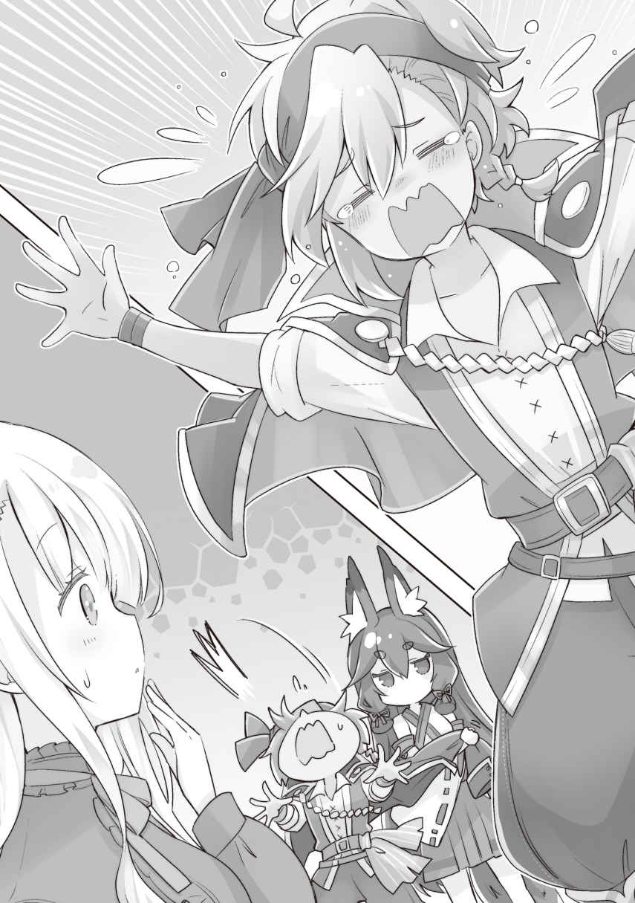
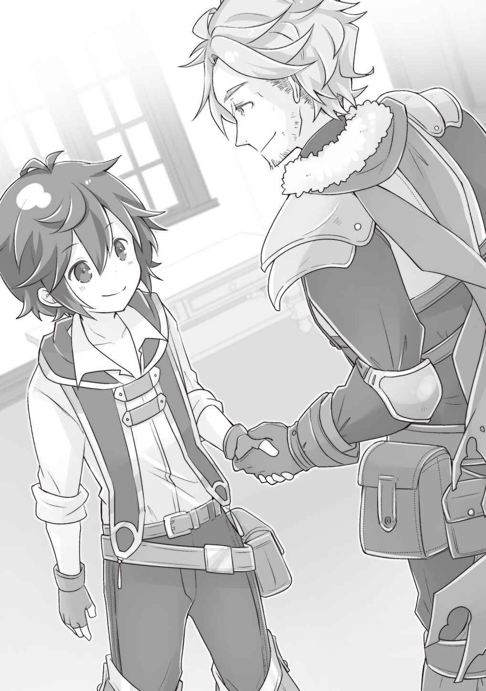
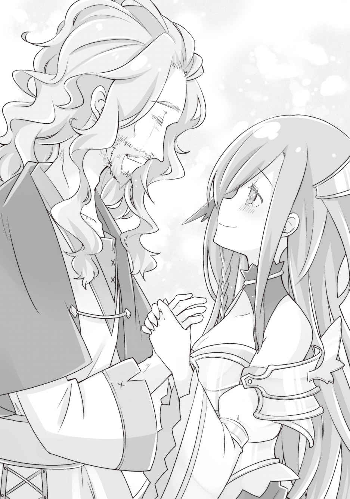

第二章
向かい風だろうが、横風だろうが、全く苦にすることなく爆進する我らがボロ船。
カエデからアホウドリ号という名前を付けられて、凄まじい速度で航行中である。
名前の由来は、甲板で羽を休めに来たアホウドリが可愛かったからという簡単な理由だ。ちなみに、デカくて食べ応えがありそうだったので、捕獲して数羽開拓村に放り込んでおいた。食用以外に、羽毛をとるにも適していそうだ。
カエデに命を与えられた船は、完全に固定されたスクリュープロペラを回転させて、自分の意思で船を進めることができる。
本来ならば、エンジンかモーターでも無ければ、これだけの速度は出せないはずだ。しかも帆船のように風の強さや向きに左右されることがない。まだ蒸気機関もあるかどうか怪しいようなこの世界では、おそらく最強だろう。
昼は航行、夜はカエデの能力の限界もあるので、就寝というペースで数日。
あっという間に、沿岸部近くまで辿り着いた。
「あと半日もすれば着くな。こっからは、帆を張っていこう」
「アイアイサー！」
「オサオサー！」
さすがに、港に船を着けるのに謎動力というわけにもいかないので、帆船のふりをして接岸する。帆を張るのはレンと戦士君たちが担当してくれるが、張り方はよくわかっていないので適当だ。はっきりいって、追い風以外では前に進むことすらできない。
だが、さしあたりはこれでいい。パッと見て違和感がなければ。
もっと近くに接岸したら、オールを使って進むスタイルに切り替えるつもりだ。
アビスの魔法で帆に風を送り、ゆっくりとした速度で進むアホウドリ号。
「けっこう早く着いたけど、これ、普通の船だったらどれぐらい掛かるんだろうな？」
横にファウゼルがいたので訊く。
「上手く風を掴めば十日ぐれぇだろうが、風の向き次第じゃ難儀するかもしれねぇな。余裕を見るなら二十日は欲しいだろうが、そうなるとある程度大型船じゃねぇと難しいかもしれねぇ。食料もそのぶん積み込む必要があるだろうし」
「途中で補給するところがないもんなぁ……」
彼の見立てでも、やはり厳しいのではないかというものだった。
ファウゼルによると、普通、商船は沿岸を延々と航行するものだという。なるほど、陸地が常に見えているならば、羅針盤の類は必要ない。補給も楽だ。
その点、俺たちの島に来るとなれば、沿岸からは離れてなんの目印もない大洋を行かなければならない。船乗りについての知識はないが、沿岸部を航行するよりはリスクが高いのは間違いない。
「やっぱり、大商人とか貴族のお抱え商人とか、そういうのを相手するしかないか」
「実際どうなのかは俺もわからねえ。船は好きだが、船乗りってわけじゃねぇからな」
まあ、何事も焦って決める必要はない。
俺たちが暮らす島は実際はかなり大きい島だ。方角さえ正確であるなら、辿り着けないということはないと思う。
そもそも、島の近くまで漁船が来ていることはあるのだから、小型の船では来られないということはないはず。あの漁船を捕まえて、どうやって島のとこまで来たのか訊いてみてもいい。
「マーイーロードー！」
マストのてっぺんに登って、周囲を見張っていたレンがデカい声を出しながらスルスルと降りてきた。
「どうした」
「なんか船が近寄ってきてますよ。五隻くらい。けっこう大きい船」
「へぇ。沿岸警備隊かな」
そんなものがあるのかどうかは知らないが、そろそろ港に着く。まだ肉眼で見えないくらいには陸までの距離が離れているが、変な船が上陸しないように警備の船が巡回していてもおかしくはない。
「おい、大将。あれ、海賊船じゃねぇのか？」
「海賊船？」
横にいたファウゼルが警鐘を鳴らす。海賊船って、なんだっけ？
「知らねぇのか？ 海の盗賊だよ。商船なんかを襲って金品やら商品やらを強奪するんだぜ。乗員も捕まったら奴隷にされちまうんじゃねえか？」
物騒な話をしながらも、ファウゼルは歯を剥き、なんだか楽しそうだ。
うん。まあ知っていたよ。海賊は知ってる。ただ、それが実際にいて、自分が襲われるかもとはチラリとも考えていなかっただけで。
海賊ってマジで実在するんだな。
「もしかしたら、私掠船の可能性もありますわね」
ユーリもやけに冷静にそんなことを言う。
「私掠船？ 海賊とは違うのか？」
「海は広いですからね。私掠……海賊行為を国が認め、敵国の船を襲わせるんですわよ。海軍のみで海を守るのは容易ではありませんから。とはいえ、あの船が帝国側か、それとも近隣国のものかはわかりませんが」
「こっちは完全にフリーの商船だからなぁ」
あれが海賊でも私掠船でも、やることは変わらない。
「まあ、適当に対応するから、とりあえずユーリたちは船底に隠れていてくれ。俺とファウゼル、アビスとレン……あとは戦士君たちだけでいい」
船というのは簡単に無力化できる乗り物だ。なにせ、動力が限られている。
魔法の撃ち合いになるならともかく、近接攻撃手段しか持たない者相手なら、それほど警戒する必要はない。
「お兄ちゃん、私も参加しようか？ 海賊の嘘を暴けるよ？」
「尋問するのは相手を捕らえてからだから。とりあえず隠れててくれ」
「私は盾が使えますから、一緒にいても？」
「いや、それもとりあえずはいいかな。ユーリやルキアが甲板にいて、海賊どもが変に張り切っても困る。なにせ二人とも美人だから」
海賊が戦利品とするものの半分は女や子どもだろう。昔、マンガで読んだから知ってる。
俺の言葉に二人は、薄く頬を染めた。
「……わかりました。その言葉に免じて折れましょう。気を付けて下さいね」
「確かに海賊なんかに変な目で見られてもいやだもんねー。大人しく隠れてまーす」
まあ、二人が美人なのは確かだ。ただ、俺の感覚では戦闘に参加するアビスとレンも同じくらい美人なのだが……まあそこは置いておこう。魔法使いと比較しても仕方がない。
「たぶん、戦いにならないと思うよ」
船倉に入っていく二人を見やりながら、俺は小さく呟いた。
俺たちの戦力は、一般的な武装集団と比較しても頭十個は抜けている。魔法使いが三人もいる上に、戦闘巧者のファウゼル、無尽蔵に魔法を繰り出すアビス、火力の化身のレンとそれぞれが強キャラだ。
あと、トテトテと可愛らしくて忘れがちだが、戦士君も普通に強い。海賊がどれだけの戦闘力を持っているのか知らないが、下手をしたら戦士君一体で完勝する可能性すらある。
ゲームだったらオート戦闘でノーダメクリアできるようなイベントである。
海賊船と思しき五隻の船は、俺たちの船を取り囲むような進路を取った。
こちらに用があるのは間違いないようだ。
海賊船の左右側面には十本程度の長いオールが取り付けられており、手動操作で船を上手く操り俺たちの船の進路を塞いでくる。
見た感じ大砲らしきものは積まれていない。例のドクロマークの海賊船旗も掲げていない模様。
ていうか今気付いたけど……旗か。
船はなんか旗を掲げなきゃならなかったのかもしれない。どこの船で、なぜここにいるのか、そうじゃなきゃさっぱりわからないのだから。まあ、俺たちの船はボロだし、漁船なんかは旗なんか掲げてないような気もするから、問題にはならないかもだが……。
まあ、次から気を付けよう。
のんきにそんなことを考えていると、俺たちの船を取り囲み終えた五隻の内の一隻が接近してきた。
大声でこちらに停船を呼び掛けてくる男は、それほど粗野な印象はなく、海賊なのかどうかは五分五分といった印象だ。
こちらが停船すると、向こうの船から武装した男たちがドヤドヤと乗り込んできた。武装は剣や斧や弓などだ。男たちはそれなりに体格も良く、日焼けした肌と太陽光で焼かれて縮れた髪が、いかにも海の男といった風情。
十中八九海賊だが、とはいえ俺は世事に疎い。帝国の巡視船かなにかの可能性もある。
俺はアビスとレンに護衛を頼み、油断なく前に出た。
船に乗り込んできた八名の男たちの中から、一歩前に出たのは、あまり強くなさそうな線の細い美青年だった。
こいつが頭目なのだろうか。普通に考えれば、一番力の強いやつが頭目になるものと思うが、海賊稼業はパワーよりも、いろいろと必要な力があるのかもしれない。
「あんたたち漁民っスか……？ いや、そんな感じではないっスね」
リーダー格と思しき若い男が言う。
妙に軽い口調だが、どうやらこちらが何者か測りかねているようだ。
「ただの零細商人ですよ」
「行き先は……ライムリーグ帝国っスか？」
「もちろん」
ちなみに、相手が何者なのか測りかねているのは、こちらも同じだ。だから、あえて正直に話すことにした。
巡視船なら恭順路線だし、海賊なら倒すだけだ。腹芸を使う意味はない。
「なら荷をすべて頂くっス。素直に寄越すのであれば命だけは助けてやる……っス」
男たちが一斉に武器を抜きこちらに向けてくる。
やはりというか、残念ながら海賊だったらしい。
想像する海賊像よりマトモだったので、もしかしたら違うのかなと思ったのだが……。
連中が乗ってきた五隻の船を見る。
五隻とも同じ船だ。全長二〇メートル級の帆船で、乗組員は各船に十五名程度だろうか。
取り囲んでいる残りの四隻は、特に近付いてくる気配はない。おそらく、一隻だけで十分だと考えているのだろう。
俺たちがただの商船だったなら、その通りだっただろうが──
「アビス、こいつらは全員電撃で眠らせて。殺さないようにな。レンは帆を焼け。五隻共」
「……了解」
「アイアイマイロード！」
海賊たちが反応をするよりも前に、アビスとレンは動いていた。
というより、レンが紅蓮の炎をその両手から出現させた時点で、男たちは手を出してはいけないものに手を出したのだと本能的に理解したようだった。
魔法使いは一般の兵千人分の力を持つと言われている。
それだけこの世界で「魔法使い」とは規格外の存在なのだ。
────数分後。
俺たちの船に乗り込んできた海賊たちは全員アビスの電撃を喰らって気絶。
海賊船はレンの遠距離魔法で帆を焼かれて航続能力を喪失。乗組員は白旗を揚げた。
さすがに、オールを使った人力航行だけで逃げる気にはならないらしい。
というか、この程度の相手ならアビス一人いるだけで、簡単に制圧できてしまう。レンまで入れれば過剰戦力で、さらに戦士君とファウゼルまで余らせている。
改めて、自分たちの力の異常さを感じるな……。
「それで、どうすんだ？ こいつら」
伸びている男たちを前にしてファウゼルが言う。
「んまぁ、普通に考えれば憲兵かなにかに引き渡せばいいんだろうけど……」
それだと、あんまり旨味はなさそうだ。
少なくとも船はいただく。船は貴重品。買えば高いだろうし、造船の技術的にも興味がある。なにより、開拓村にちゃんとした船をそろそろ入れたい。
前に手に入れた軍船は現実世界で使う用なので、開拓村に卸してはいないのだ。
「とりあえず……この青年がリーダーなのかな」
代表して前に出たちょっとチャラい感じの青年は、白目を剥いて伸びている。人間は電撃にはどうしたって弱い。今のところ人間に使って後遺症が出たということはないが、海で使うのはちょっと危なかったかもしれない。
水に濡れていると電気抵抗が下がって、感電の危険度が上がると聞いた記憶がある。
まあ、それでも他の手段よりは安全だ。
こん棒でぶん殴ったり、火で焼いたりするよりは……。
「こいつは起こして話を訊くか。アビスとレンは残りの連中を縄で縛っちゃって」
「話なんぞ訊く必要ねぇと思うがなぁ……」
「いやいや、貴重な情報源だよ」
俺たちは、しょせんは孤島暮らしの世間知らずだ。
ファウゼルは元傭兵だから、ある程度は情報に明るいだろうが、それでも個人で手に入れられる情報には限度がある。
「おい、起きろ」
海賊の頭目を揺すると、「ん……」とうめき声を出して目を覚ました。
「あ……あれ……？ あんたたち誰っスか？ ボク、なにしてたんだっけ」
電撃でいきなり昏倒させられたからか、記憶が曖昧になっているようだ。
しばらく呆けていたが、周りで縛られている部下を見て、ようやく状況を把握した。
「……魔法使いが……乗ってたんスね。これで終わりってことっスか……」
ガックリと項垂れる頭目の青年。まあ、海賊行為をやろうとして失敗すれば、当然終わりだ。憲兵に引き渡せば、良くて縛り首。悪ければ拷問も付いてくるだろう。
「ん、まあ命は助けてもいい」
「おい」
ファウゼルが止めようとするが、やはり殺されるとなると可哀想な気がする。海賊は悪いことだが、なんとかとハサミは使いようと言うし。
「み……見逃してくれるんスか……？」
すでに半泣きの頭目。潤んだ瞳がこちらを見上げてくる姿は男とは思えないほどに美しく、女だったらイチコロで許してしまいそうだ。つーか、こんな美青年なのになんで海賊なんてやってたんだろ。意外と仕事ないのか、帝国にも。
「そうだなぁ。ちょっとお前らの使い道を相談してみてからになるが……」
「海賊に使い道なんかねぇぞ。そもそも、信用できねぇ連中に任せられるものなんざ、捨て駒ぐれぇのもんだぜ」
ファウゼルの苦言もわかる。
確かに、こいつらに代わりに商品を売ってきてもらうのは難しいだろう。姿をくらますのが落ちである。住民候補とするのも微妙。
かといって、そのまま見逃せばまた海賊稼業に戻るだけだろう。それで泣きを見る人間が出るのはいただけない。
「すぐ決める必要もないし、とりあえず全員時を止めて島に運んでおくか？」
もしかすると全員分は能力の限界的な意味で無理かもしれないが、島に戻ればローザだっている。結論を後回しにするのに、時止めの能力は実に便利である。
結局、後で考えるために船倉からルキアを呼んだ。一緒になってユーリもくっついてきたが、まあほとんど全員昏倒中だから問題ないだろう。
「もうやっつけたの？ さすが、お兄ちゃん！」
「お兄ちゃんは別に凄くないんだけどな……」
どうしてルキアがこんなにお兄ちゃんっ子に育ってしまったのかは謎だが、まあ、海賊を数分で無力化するのは、確かに凄いことかもしれない。やったのはアビスだけど。
「それにしても、海賊なんて本当にいるんですのね……」
ユーリも甲板上で伸びている男たちに眉をひそめている。
まあ、なんだかんだ言ってユーリは元王族で、蝶よ花よと育てられたお姫様なのだ。実際の海賊など見たことがないのだろう。いや、まあ俺も見るのは初めてだけど。
「……え？ ひめ……さま……？」
一人だけ意識のある頭目の青年が、呆気に取られたような顔で呟いた。
「ん？」
青年はまっすぐユーリのほうを見つめている。
茫然として──幽霊でも見るかのように。
ユーリのほうも、すぐにその視線に気付いた。
一瞬視線を合わせて外し、すぐさまもう一度青年の顔を見る。
絵に描いたような二度見だ。
「え……嘘。あなた、レイラ……？ レイラなの……？」
ユーリがその名前を口に出すと、青年はパァッと顔を輝かせた。
「そうっス！ こんな格好してますが、レイラっス！ やっぱり姫様！」
なんだか知らんがユーリの知り合いらしい。
「うわぁあああ！ 姫ェ！ ぜったい殺されちゃったって思ってたっス！ い、生きてたなんて！ 諦めないでいて良かったっスぅぅうううう！ 痛いっ！」
ユーリに抱き着こうとして、レンに引き倒される青年。
そのあと、もう一度ユーリの顔を見て、めそめそと泣き出してしまった。
「姫様と呼ぶってことは、ユーリんとこの元国民なのか？」
「ええ、彼女のおじいさまがモンディアル海軍の提督だったので、親しくしていたのですが……。なんで男の子みたいな格好してるんでしょう、彼女」
首をかしげるユーリ。美青年すぎるとは思ったが、どうやら男装だったらしい。
海賊をやるにあたって、男の振りをしていた──そんなところだろう。
つまりモンディアルの生き残りで幼馴染。
しかも、提督の孫となると貴族だろうか？ いや、ユーリの国には魔法使いはほとんどいなかったらしいからわからない。そもそも、海軍に魔法使いを配置するものなのかどうかも知らないし。
「ユーリ。旧知の人間に会えたわりに……あんまり嬉しくなさそうだな」
「嬉しいですよ。ですが、まさかこんな場所で再会するとは夢にも思わなかったので……。困惑しています」

おそらく、彼女──レイラは国の中では高い地位にあっただろうに、それが海賊に身をやつしていたのだから、ユーリとしてはショックだろう。
戦争の責任が誰にあるのかなんて俺にはわからない。だが、国のトップである王族だったユーリは、限りなくその「責任」を取るべき立場に近い存在だろう。
「……私は、ずっと感じていました。あの戦の責任を取らなくていいのか……、自分だけ幸せになるなんて許されることではないのではないかって……」
「難しいな。別人ってことにするか？ 他人の空似ってことにしてもいいんだぞ」
「もう。そんなこと……できるわけないのです」
はっきり言ってしまえば、ユーリに責任を取る手段なんてない。
もし、モンディアルの王族を憎んでいる元国民がいたとしても、せいぜい「王族を殺せば気分がすっきりする」という程度のものだろう。ユーリがそれで死んで見せたところで、本質的な意味での救いはない。
というかモンディアルが滅んだのはユーリが十三歳のころだ。この世界では大人扱いに近い年齢だとはいえ、普通に考えれば戦争の責任などあるはずがないのだ。ユーリは頭が良いから、そんなことはわかっているはず。
だが、それでも元王族であることに違いはない。
だからこそ割り切れないのだろう。
「あっ！ みんなにも教えなきゃ！」
めそめそと泣いていたレイラは、がばっと顔を上げて突然そんなことを言った。
みんなというのは、後ろで伸びている連中のことだろう。
「こいつらも全部元モンディアルなのか？」
俺がそう質問すると、レイラは目をぱちくりさせた。
「えっ？ あなた誰ですか？ 姫様のなんなんです？」
「俺はカイだ。この船の持ち主だよ」
とりあえず、不要な明言は避けておく。間違えたことは言っていない。
「あ、船頭さんですか。そうですよ。彼らはみんな元モンディアル公国民っス」
「軍人なのか？」
「半分くらいはそうっス。まあ、あの魔法使いの子に簡単にノされちゃったっスけど」
「レイラ、詳しく訊いてもいい？」
「もちろんっス！」
彼女の話によると、もともとレイラの祖父が率いる海軍も、攻めてくる帝国軍相手に慣れない陸地で戦ったらしい。だが、奮戦空しく敗戦。
壊滅的な状況に陥りながらも、彼女の祖父は部下たちに撤退を命じ、レイラはその時すでに集められていた女性や子どもたちと一緒に船に乗せられたのだという。
モンディアル公国はライムリーグ帝国と陸続きのため、帝国海軍は物資の輸送以外には船を繰り出してきていなかったとかで、そのまま海上へと難を逃れることができたのだとか。
とはいえ、総勢でたったの一五〇名程度。それも、軍人は半分程度であとは、彼らの家族やその子どもたちなのだという。
「それで逃れたものの、どうすることもできず海賊稼業で糊口を凌いでいたと」
「ち、違うっス！ ボクたちはずっと帝国と戦ってたんっスよ！」
「女や子どもも乗っているのに、戦闘していたのか？」
「帝国軍はちゃんとした海軍がないっスから、ボクたちだけでもけっこう戦えてたんです。でも、途中から魔法使いが護衛で乗るようになって、それからは逆に逃げる側になってしまったっス」
そりゃ帝国だってバカじゃないんだから、何度も襲撃されれば対策もしてくるだろう。
しかし魔法使いが出てくるとなると穏やかじゃない。可愛い顔して、かなりやりすぎていたのかもしれない。
それにしても、いくら帝国の海軍が弱いといっても、こんな人員やら装備やらでそこまで無双できるとなると、彼らの操舵技術は本物ってことだ。
「それからは、どうしてたんだ？」
「船を隠して陸に上がって、荷下ろしの仕事とかしてました。でも、子どももたくさんいるし……食料もお金も底を突いてしまって、軍じゃなくて帝国に荷を卸す船を襲うべきだって話になって……。帝国の力を削ぐって意味では同じっスから……」
海賊行為が悪い行いだとは自分でも思っていたらしく、シュンとなるレイラ。
なるほど、帝国軍は無理でも彼らの実力なら商船を襲うくらいはお手の物だろう。むしろ、荷下ろしなどの労働をしていただけでも偉いと言えるのかもしれない。
「別に責めてるわけじゃないんだ。同じ立場なら俺でもそうするのかもしれないし」
前世の善悪の基準を拭い去るのはなかなか難しい。
悪いことは悪い。その当たり前な道徳観はそのままで俺の中にある。
だが、この世界では、弱いものは意見を通せないし、生きることもできない。
だから、彼らにとっての悪者である「帝国」のことを積極的に糾弾しようとも思わないし、かといって、彼らが海賊をやっていたことも責める気にもなれない。
そもそも、俺は当事者じゃないし、糾弾するような立場でもないしな。
少しずつ元モンディアルの人たちが目を覚ましてきたので、ユーリを交えて事情を訊くことにした。
とはいっても、さっきレイラから訊いた内容から大きな差はない。
「ボクが悪いんス……。おじいちゃんの仇を討つなんて言ったから……。みんな、それに付き合ってくれたんです」
「レイラさんは悪くありません！ 海戦の天才だった将軍のお孫さんである彼女を担ぎ上げたのは私たちのほうなんです！」
男たちの一人が声を上げる。
「そういえばレイラは将軍から手ほどきを受けていましたね」
「うう……。確かに、海戦に不慣れな帝国軍には何回か戦ってなんとかなったっスけど、あくまで向こうが巡視船みたいなものだったからで……。魔法使いが出てきたら、逃げるだけで精一杯だったっスから……」
ライムリーグ帝国は広大な大陸のほとんどを版図に持つ大国だが、海戦の経験は浅いらしい。俺たちが阻止したラベルダ王国への侵攻には船を用意してあったが、あれも、あくまで輸送目的だったので、船に乗って戦うという戦略自体があまりないのかもしれない。
一方、モンディアル公国は、多くの島々からなる連邦国と近い為、海軍はそれなりに発達していたのだという。逆に、陸は山がちな地形に守られていた関係で、陸軍にはあまり人員を割いていなかったらしい。そうでなくても、国境を挟んだライムリーグ帝国とは、友好条約を結んでいたらしいから、仕方ないのかもしれないが……。
「ユーリセシル姫！ ボクたちは国が滅んでも、心はモンディアル人。王家への忠誠を忘れた日はありませんでした！ ここで再会できたのは運命！ 我々を、導いてくださいっス！」
「私たちもお願いします！」
「姫！ お願いします！」
一斉に首を垂れる、モンディアルの生き残りの方々。
まあ、こんなことになるだろうとは予想できていたが……。
横に立つユーリは、表情にこそ出さないが明らかに困った様子だった。そもそも、俺はユーリを助けたときに「復讐を忘れるなら」と、釘を刺してある。
とはいえ、ユーリの本当の胸の内はわからない。国を滅ぼされた当事者なのだから、俺が軽々しく口を挟める問題でもないように思う。
「…………ッ。私は……」
言葉に詰まるユーリ。
俺はモンディアルの当事者じゃない。だからといって、ユーリやサラや元近衛隊のみんなと、無関係というわけでもないのだった。
だから、この人たちのことも、到底無関係だと割り切れるわけがない。
「お前ら、亡国の姫様を担ぎ上げたとして、それでどうしたいんだ？ どうなったら満足なのか教えてくれ。まさか、この子を担ぎ上げれば帝国を倒せると思ってるわけじゃないんだろう？」
「ん？ なんで船頭さんがそんなこと訊いてくるんスか？」
こいつらは偶然再会できた自分たちの姫様のことしか見えていない。
まあ、ユーリは「モンディアルの宝石」とまで言われ、他国でも有名だったみたいだし仕方ないのかもしれないが……。それにしても、なんとなく釈然としない感じもある。
「俺がこの子の保護者だからだよ。俺が納得できるビジョンがないなら、お前らに渡すことはできない」
「保護者……？ どういうことっスか姫？」
俺とユーリは同い年くらいだ。
保護者と言われても意味がわからないのかもしれない。
「ユーリはなにも答えるな。ややこしくなるだけだから」
まず、こいつらの考え方や希望を確認しておかなければ。ユーリがなにかを言えば、その意見に引っ張られる可能性がある。
もしも、こいつらが復讐派なら助けるつもりはない。もちろん、殺すという意味ではなく、単に関わりを持たないという意味だ。
だが、それは俺の考えでユーリはまた別だろう。彼らの目的が復讐にあると知った上で、ユーリがどうしても彼らを助けたいというなら、彼女だけ置いていくのも止む無しと俺は考えていた。こんな考え方は、情が薄いだろうか？
「さあ、答えてもらおうか。彼女を担ぎ上げて、お前らはどうしようっていうんだ？」
「どうって……わ、わからないっス」
「ん？ なんだって？」
「だから……、わからないっス。わからないから、ユーリ姫様なら、ボクたちがどうすればいいのかわかるんじゃないかって……」
何を言っているんだ、こいつは。
「他のみんなはどうなんだ？」
「……正直に言えば、レイラさんの言う通りなんです。我々は海以外に生きる術を知らないんです。だけど、住む街を追われ畑を耕す知識もない。だから……わからないんです。どうしたらいいのか。どう生きればいいのか」
男たちの一人がそんなことを言う。
「他の連中も同じなのか？ いい大人が雁首揃えて」
静かに肯く男たち。他の船に乗っている連中も基本的には同じらしい。
「うーむ……」
これだけの人数がいて、無策にもほどがあるとは思うが、考えてみればそういうこともあるのかもしれない。
人間ってのは何かに縛られて生きるものだ。血縁だったり、土地だったり。
だが彼らは、戦争でなにもかも失い、あるものは五隻の船だけ……。
そういう状況になった場合、そう簡単に船を捨てたり、解散してそれぞれの新しい人生を歩んだりとは、できないものなのかもしれない。
誰かが自分たちを導いてくれるなんてのは甘ったれた考え方だが、本質的な意味での「自由」がほとんどないこの世界では、仕方がないのかもしれない。
「……帝国への復讐は考えなかったのか？」
「もちろん、その気持ちはありましたが……。日々の暮らしだけで精一杯で」
まあ、そうなるだろう。そうでなくても、ただ生きるだけで大変なのがこの世界だ。あるいは、前世の世界であっても、生きることが過酷である場所はいくらでもあっただろう。
まして、戦争で住む場所を失った人たちならば、なおさら。
最初は海賊だと思っていたから悩んだが、まあ、彼らなら問題ないだろう。
「ユーリ。お前が説明して説得しろ」
「えっ、じゃあカイ様──」
「あくまで信用できる人間なら使ってもいいってことだ。人はいくらいてもいいからな」
俺は説明をユーリに丸投げした。
結局のところ、国を大きくするのなら人の受け入れは大前提だ。
むしろ、海賊でないことが判明した今、それをしない理由がない。
それを思えば、元モンディアル人ならお互いにウィンウィンの関係だろう。向こうは住む場所が欲しい。こっちは労働力が欲しい。
特に、海に明るいというのが良い。
貿易船の運用を彼らに任せられればの話だが、まあ、結局はある程度は任せる他ないのだ。すべて自分でやるのが不可能である以上。
そういう意味で、ユーリに縁がある彼らは、相対的に絶対に誘うべき人材だと言えるだろう。偶然の出会いだったが、良い方向に進むと思いたい。
残りの四隻の船に乗っていた人たちも集めて、ユーリが状況を説明した。
「これは……酷い状況だな……」
残りの船に乗っていたのは、ほとんどが女性や子どもたちだった。
汚れた服。満足に身体も洗えていないのだろう。臭いも酷い。食事も満足に取れてはいないのか、みんな一様に痩せている。
これだけの人たちが、帰るべき家も持たずにいたというのか。さすがに普段は港の端っこに船を泊め、ボートピープルのような暮らしをしていたそうだが、それにしても酷い。
ユーリが、こんな暮らしはやめて俺たちの島で国民にならないかと勧誘する。
ただし、場所は絶海の孤島。事実上の開拓民である。
断るのなら断るでも構わないのだが、彼らからすれば渡りに船だろう。帰る場所がないのなら、背に腹は代えられまい。
「……カイ様。話がまとまりました」
「ん？ ずいぶん早かったな」
故郷を同じくする人たちだ。別にさほど急いでもいないから、積もる話もあるだろうに。
「それで結局どうするって？」
「ええ、それなのですが──」
俺たちのボロ船はハッキリ言って狭い。そこに一〇〇人近い元モンディアル人たちが寿司詰めになっているのだが、その人たちが全員一斉に片膝になり首を垂れた。
「カイ様！ ユーリセシル姫から話はお聞きしました！ 我々、元モンディアル海兵隊士一同！ これから、カイ様の下で精一杯尽くさせていただく所存です！」
ユーリがどういう説明をしたのか知りたいような知るのが怖いような感じだが、無事に一緒に来ることになったらしい。海賊行為をしてたとか、帝国と戦ってたとかちょっと訳ありな人たちだが、その程度の経歴は清濁併せ呑んでいかなければ、あんな場所で国作りなどできるはずがない。
「ユーリからどこまで聞いているかは知らないが、少なくとも衣食住に困ることはない。仕事はたくさんあるが、賃金も渡す。そう悪くない生活ができるはずだ。これから、俺と共に国を盛り上げていって欲しい。……とりあえず、お風呂入って美味い物でも食べよう」
そういって、無理にでも微笑みを作った。
生き物が仲良くなるには、食事を分け合って食べると良いらしい。それは、命を分け合う行為だからだって、前世で読んだ本に書いてあったことを思い出していた。
「ありがとうございます！」「ありがとうございます！」
涙を流し、まるで拝むかのように感謝されてしまって逆に居たたまれないが、彼らの境遇を考えれば仕方ないことなのかもしれない。
悪い状況から抜け出せるなら悪魔の手だって掴むだろう。困窮すれば当然だ。
せいぜい、俺が悪魔にならないようにやっていこう。
俺は、ただの十五歳の子どもでしかないから、どうしてもこういうのは慣れないのだけど、これから国を大きくしていくと決めた以上、早く慣れるべきなのだろう。
結局、彼らは本当にほとんどの荷物を持っておらず、海賊船と化した船も生活空間として利用していたようで酷い有様だった。
俺たちは商品を帝国に運ばなければならないので、彼らは船ごと一度開拓村に回収し、全員島へとご案内となった。
俺の能力と、瞬間移動には当然驚いていたが、モンディアル元近衛隊に知り合いがいたらしく再会を喜び合っていた。
住む場所については、すでに簡易的な長屋をいくつも用意してあるから問題ない。食事も、サラたちに頼んでおいた。
サラといえば、元モンディアルの人たちにとって、サラは貴族であり魔法使い。
まさかエプロンを付けて料理を作っているとは夢にも思わなかったようで、最初は他人の空似だと思っていたようだ。サラだと気付いた時は、普通に腰を抜かしていた。
船に関しては一度島の港に停泊させておいた。
何隻かは塗装して再利用しようかと思う。残りは開拓村に入れてしまおう。
そんなこんなで、元モンディアル人たちを島に残し、またボロ船へと戻ってきた。
ユーリは連中の面倒を見るというので置いてきた。カエデもとりあえずもう船に命を与える必要がないので、レンと一緒に島に戻ってもらった。
レンはどうしようか少し悩んだが、俺の護衛としてはアビスとファウゼルと戦士君たちがいれば十分すぎる。
◇◆◆◆◇
「さて、変なとこで時間食っちゃったけど、出発するか！」
日はまだ十分に高いが、あんまりゆっくりもしていられない。港で手間取る可能性も高いし、そうこうしている間に日が暮れたら面倒だ。
そう思って戦士君たちへ全力前進の指示を出そうとしたら後ろから声を掛けられた。
「船頭さん！ ちょっと待つっス！」
「ん？ あれ……レイラだっけ。なんで残ってるんだ？」
全員で開拓村経由で島に戻ったはずだったが、声を掛けてきたのは男装麗人のレイラだった。なぜか、まだ船に残っていたらしい。トイレにでも行ってたのかな。
「置き去りにされちゃってたのか。すぐ送るよ」
「ボクは自分で残ったんスよ！」
俺が近づくと警戒して後ずさり、そんなことを言った。
「ボクは信じないっス！ あの、この世で一番美しく気高く最高な姫様の相手が、あんたみたいなパッとしないのだなんて！ 弱みに付け込んだに決まってるっス！」
ビシッと指を差して睨んでくるレイラ。
なるほど、やっと出会えた麗しの姫様に変な虫が付いてたので、いてもたってもいられず──ってとこか。
まあ、自分でもユーリと俺が釣り合っているとは思ってないから、そう思ったとしても不思議じゃない。
だが、その言葉が逆鱗に触れた者がいた。俺の隣に。
「ハァ？ あんた、なにいきなりアホみたいなこと言ってるわけ？ 私の、この世で一番カッコ良くて可愛くて最高なお兄ちゃんに文句があるわけ？ 殺すわよ？？？」
ルキアは、いきなりキレた。怖いよ。
「なんなんスか、あんたは。船頭さんの妹は、すっこんでろっス」
「すっこまないわよ。別にお兄ちゃんは、あの女なんか相手にする必要ないのよ？ モテモテなんだから。モッテモテなのよ？」
おい、やめろ。モテモテかどうかは諸説あるぞ。
「あのお姫様だって、お兄ちゃんにメロメロで、向こうから言い寄ってきてるんだから」
「う、嘘っス！ 姫様がそんな……そんなこと……」
「あるわよ！ あの女だって、一人の女なのよ？ そりゃー、目の前に私の最高なお兄ちゃんが現れたら好きになっちゃうって。当然、当然」
「う……ううう……」
服の袖を噛んで悔しがるレイラ。
一方、ルキアは勝ち誇った顔でレイラを見下ろしている。
「なんなんスか……。だって、姫様はどこかの大国のカッコいい王子様と、物語みたいなロマンスをするはずだったんスよ……」
レイラにとってユーリはまさに物語のお姫様を体現する人間だったのかもしれない。
それが、こんなボロ船に乗ってる、わけのわからない男の嫁になるだのなっただの……。そりゃ文句のひとつもいいたくなるのも無理ないか。
「はっはっは。だが、そういうことなら大将は悪くねぇぞ」
後ろからやってきたファウゼルが、太い腕をガッと俺の首に回してくる。
「誰なんスか。おじさんは」
「俺はおじさんじゃねぇ！ ファウゼルお兄さんと呼べ」
ファウゼルがおじさんなのかお兄さんなのかどうかは諸説あるぞ。
「ファウゼルお兄さん……っスか」
「そーだ。それでだな、大将はこれから大国になる新しい国の王様なんだぜ。どっかの大国のボンボンなんぞより、ずっといい。有望株ってやつだ。あのお姫さんは世間知らずっぽく見えるが、実はかなり男を見る目があるよ」
ファウゼルの妙に俺に対する評価が高い。ちょっとこそばゆいな……。
「ユーリ姫様も言ってましたけど……本当に王様なんっスか？ だいたい、どこにある国だっていうんスか」
「こっからずっと東に行くと海の真ん中にデカい島があるんだよ。そこに国を興したんだぜ」
「東の……島……？ 海の真ん中──って、それ禁忌の島じゃないっスか！ あんなとこで国なんて作れないっスよ！ 姫様を変なことに巻き込まないで下さいっス！」
ギャーっと喚くレイラ。
「おい、知っているのか？ あの島を」
聞き捨てならない言葉だったので俺は口を挟んだ。
あの島を知っているのは、神殿関係者……それも上層部の人間だけだと思っていたのだが、そうじゃなかったのか？
「モンディアルとか連邦の船乗りならみんな知ってるッスよ！ 近付くと不吉なことが起きるとか、魔物もたくさん住んでて、人間はみんな食べられちゃうとかって聞いたっス。ボクも、悪戯がバレるとよく爺ちゃんに『禁忌の島に捨てるぞ！』と脅されたものっス！」
「めちゃくちゃ有名じゃねーか！」
神殿関係者だけが知る島かと思ってたが、全然そんなことなかったらしい。
いや……まあ、あの島のサイズで誰にも知られてないというのは無理があるか。
そうでなくても、魔女ステイシーが封印される前……おそらく千年以上前なのだろうが、そのころは人だって住んでいたのだろうから。
千年は確かに長い期間だが、島があるという情報そのものがなくなるとは考えにくい。
島の存在は知っていたものの、魔物が蔓延る島というのは事実なので、誰も手出しできなかったのだろう。
絶海の孤島で利用価値を見出さなかった可能性もある。
「あの島を知っているなら話が早い。場所がわかるなら、航海ルートもわかるんだろ？」
誰でも利用できるルートを見つけなければ、あの島を国としてなんとかするのは難しい。
だから、自分たちでなんとかしなきゃならないと思っていたのだが、地味に有名ならば案外なんとかなるのかもしれない。
「あの島へは帝国にある神殿大聖堂から真東に行けば着くっス。連邦の大聖堂からなら真北っスね。海流がやっかいっスけど、ちょっとくらいズレても島は大きいっスから、辿り着けるっス。といっても、ボクも一度しか見に行ったことないっスけど。海の真ん中にあるのに、大きい山々がそびえ立つ……なかなか禍々しい島だったっス」
ああ、確かに大聖堂は島から東西南北に作られてるって言っていたかもしれない。
なるほど、陸側の目印があるから、あとは真っすぐか。
方位計……羅針盤は必須だろうが、彼女が普通に辿り着けると言ってるということは、羅針盤はあると見ていいのだろう。まさか、星を見て航海してるわけでもあるまい。
「本気で、あんなとこに国を作ってるんスか……」
「そうだよ。レイラも見に来ればよかったんだよ。まあまあ開拓進んでるから、見れば納得できたはずだからな」
港も完成してるし、石畳の道も水道橋も巨大な灯台だってあるのだ。
百聞は一見にしかず。実際に住んでいる人間を見れば、現実感も出るだろうし。
「むぅっ！ ボクは自分で見るまでは信じないっス！ あんたが本当に姫様に相応しい男かどうか、ボクが見定めるっス！」
またもや俺をビシッと指差して、そんな宣言をする男装麗人なレイラ。
「付いてくるってこと？」
「そうっス！」
また、面倒臭いことを……。
……いや、元モンディアルの人たちにとってレイラは一応はリーダー格だったようだし、彼女に認められることが彼らとの関係を良くすることに繋がるのかな？
「ハァ？ なに言ってるんですか？ そんなもんダメに決まってるでしょう？」
やはり突っ掛かるルキア。
うちの妹は他の人間とはかなり上手くやるほうだが、ユーリを筆頭に妙に馬が合わないタイプがいるのが謎だ。
まあ、それでもユーリに対して『真実の瞳』を使って過去を見てからは、ちょっと……いや、かなり仲良くなったので、単純に相互理解が足りないってだけなのだとは思うが。
「いや、まあ俺のこともある程度は知ってもらわないとだし、元モンディアル人の代表として、見てもらうのもいいかもしれない」
「お兄ちゃん！」
「いや、実際こっちの地理とか常識のこと知っている人間は必要だったからな。俺たちは船を港に泊める方法やらなんやらも、全く知らないんだぞ」
「う……確かにそれはそうですが……」
レイラは海の事情に明るいようだから、学べることも多いだろう。
なにより、俺たちは常識が足りない。
港を発見したとして、どうすればいいのかもわからない。
いきなり埠頭に入っていって岸壁に横付けしていいのかどうかも知らないのだ。
常識外れの行動をして悪目立ちするよりかは、スマートにいきたいところ。
「他にもいろいろ教えてもらいたいからな。狙った方角に正確に船を進ませる方法とか」
「そんなことも知らないで外洋航海してたんスか？ 無謀！ あまりに無謀っス！」
「いやいや、自分たちのやり方で航海自体は問題なかったから。ちょっと世間知らずなだけで……」
というか、うちのやりかたは最新鋭だ。
アビスのＧＰＳで現在位置を割り出しつつ、カエデが命を与えた船のスクリュープロペラ推進なのだから。
ただ、それだとアビスとカエデがいないと話にならないから、誰でも扱える航海技術を知っておかないとならないってだけで。
「……まあ、技術とか教えるのは問題ないっス。姫様のことはともかく、みんなを助けてくれたのは感謝してるっスから」
「ありがとう。頼むぞ」
とりあえずレイラは案内役として働いてもらうことになり、俺たちは船を進めることにした。このまま進めば、目的地である港町アネーロへと辿り着く。
エドワードと戦った港町ノメルよりも、ずっと北側にある街だ。
この辺りはファウゼルの母親が治める地域で、母親である侯爵の居城も近くにあるらしい。帝国の中では元々辺境のほうだったらしいが、帝国の首都が海の近くまで遷都してきた関係で、勢いのある貴族として台頭したとかなんとか。
「アネーロは帝国で一番大きい港っス！ 自由港っスから、外国から商人がひっきりなしに来るっス。船頭さんたちも、物を売りに来たんスよね？」
「そうだよ。荷の検査とかもあるのか？」
「あるっスけど、ちょっとだけっス。売るだけなら港でそのまま売れるっスよ。船の中身ごとなら、向こうの商人が荷運びまでやってくれるっス」
「なるほど」
商売をするなら速度も重要な要素だ。荷物を運んだからといって、売れずにいたら商品も（食料なら）傷むし、時間も無駄に食う。
港に到着してすぐに現地商人が買い取ってくれるなら、話は早い。
なんなら、その場で次の積み荷を購入してから戻れば、交易としてはスマートな形なのかも。
まあ、俺たちの場合はファウゼルの母親と交渉して、直接取引をするつもりだから、とりあえず地元商人には売るつもりがない。
将来的には、商売そのものを完全に商人に委託するようになるだろうが。
「今回はとりあえず一度港に停泊させて、人に会いに行くよ」
「そうなんスか？ まあいいっスけど、停泊料取られるっスよ？」
「それくらいは問題ないさ」
そうして船を進めて数十分。水平線の彼方に陸地が見えてきた。
この瞬間はいつも謎の感動がある。なんだかんだ言っても、ずっと海の上にいるのは疲れるからだろう。
「このまま港に入って、空いてるとこに着ければいいっス。埠頭の北側は契約した船の停泊場所だから、あっちはダメっスよ？」
レイラの指示通りに船を進めて無事に港に停泊することができた。丈夫な麻で作った太い係船用のロープを使い船を固定する。
「ていうか、お前、街に来ちゃって大丈夫なのか？ 海賊やってたんだろ。お尋ね者になってるんじゃないのか」
「海賊とは心外っス！ ボクたちは協定破りの帝国軍と正々堂々と戦ってたっスのに」
「正々堂々とか関係ないだろ。ここ、帝国の港なんだろ？」
帝国からすればレイラは敵方だ。まあ、顔が割れてなきゃ問題ないのかもしれないが。
「ボクたちが戦ってたのは、南のノメルのほうっス。アネーロは自由港ですし、使えなくなると困るんで、侯爵領の領海では戦闘したことないんスよ」
「自由港たって、所属は明らかにする必要あるだろ。大丈夫だったのか？」
敵国の船でもなんでも受け入れＯＫなんて、そんな話あるわけない。
「スコルパの街の商船だって言えば、全然問題なかったっス」
スコルパはユーリたちが捕まってた元モンディアルの港街だ。
街は名前も変えず、そのまま帝国領として存在していたから、なるほどそこから来たといえば問題ないのか。
「商船を襲ったりしてたなら、よその海でやってたにせよ、賞金首にはなってんじゃないのか？ 普通に考えて。全部殺してたなら別だけど」
軍船五隻で組織的に動く海賊だ。全くのノーマークということはないのではなかろうか。
だからこそ、元モンディアルの人たちは全員島に送った面もあったのだ。
「商船なんて襲ったことないっすよ！ なんで、そんなことしたことになってるんスか！」
両腕を横にぶんぶん振って否定するレイラ。
「ん？ そうなの？ でも、うちの船を襲っただろ」
うちのボロ船を帝国軍だと勘違いするという可能性はゼロに近い。
「あっ……あれは。その……、背に腹は代えられず、もうそれしかないって話になっちゃったからで……。もうこっちも死ぬか生きるかって状況だったっスから……」
言いにくそうに、両手をイジイジさせて、言い訳し始めるレイラ。
止むを得ず商船を襲うことに決めた一発目で、うちに当たったということらしい。
運がいいんだか悪いんだかわからないような話だ。
「そのわりには、ずいぶんと手馴れてたみたいですけど。この子、どこまで嘘かわかんないですから、兄さんも簡単に信用しないほうがいいですよ？」
ルキアは、レイラのことを全然信用してないようで、呆れ顔だ。
「うっ、嘘なんてつかないっス！」
「本当～？ お尋ね者を連れてて、なんかあった時に損するのは、私たちなのよ？」
「お尋ね者にはなってない……はずっス……」
「ちょっと自信なさそうになってるじゃない」
とはいえ、正直な話、レイラがお尋ね者だったとしても実はあまり問題はないのだ。
だって、ファウゼルがマジモンのお尋ね者なんだから。
一人が二人に増えたところで、問題にもならない。
「でも、商船を襲ってたかどうかは、知っといたほうがいいか。ルキア、能力で調べてもらってもいいか？」
「えっ、珍しい。兄さんが私の能力に頼るなんて」
「必要なとこでは使えばいいと思ってるぞ、俺は」
真実の神の力だけじゃなく、能力なんてのは、そもそもが安易に使うものではないのだと思う。だが、あるものを無理に使わないのも、それはそれでバカバカしい。
「じゃあ、あなたが嘘をついていないかどうか『視る』わよ？ 『真実の瞳』！」
「えええええ！ 神官様だったんスか？」
突然ルキアが能力を使ったことで驚くレイラ。まあ、そりゃ神官服も着ていない人間が突然力を使えば驚くだろう。
ルキアは瞳を閉じて、ほんの数秒『視て』、すぐに目を開いた。
「ふーむ、なるほど。どうも白みたいですね。まあ、冷静に考えてみたら、商船を定期的に襲ってたなら、あの船の惨状はありませんもんね」
「だから、嘘なんてついてないって言ってるっスのに！」
キーっと喚くレイラだが、海賊行為をやろうとしたという事実が先にあるから信用されてないってことが、わかってないのか。
「まあ、とにかく民間船を襲ってないなら良しだ」
むしろ、彼らがある程度以上の道徳観念を持ち合わせていることがわかったのは収穫だったと言えるだろう。あの人数を島に迎え入れるのだ。「実は商船襲いまくりの殺しまくりでした」だったら、いくら元モンディアル人であろうと、考えものだったかもしれない。
そんな話をしながらしばらく待っていると、係員がやってきたので、先払いの停泊料を支払った。
帝国金貨の持ち合わせがあってよかったが、想像してたよりも高い金額だ。それだけ船を使った交易は儲かるということの証左なのかもしれないが。
「ここに来るのは本当に久々だぜ。クニを出て以来だから」
船から飛び降りたファウゼルが感慨深く呟く。
「けっこう長いのか？ 離れてから」
「七年くれぇかな。あの頃は若かったぜ、俺も」
「今はもうおじさんだもんな」
「大将まで勘弁してくれ。俺はまだお兄さんだよ」
確かファウゼルは三十歳手前くらいの年齢だったはずだ。精神年齢は俺と同い年くらいなので、感覚としてはタメ歳である。
「お兄ちゃん、これからどうするの？」
「ま、長旅で疲れてるしどっかで宿取るか？」
時間的にももう夕方だ。レイラ達に絡まれてなければ昼過ぎには着いたのだが。
「ファウゼルの実家は遠いのか？」
「さすがに馬車で一日くらいは掛かるな」
「じゃあ、どっかで宿だな」
船の見張りとして戦士君たちを残して、あとの五人で宿を取った。
次の日。
俺たちはファウゼルの案内の下、侯爵の居城へと移動した。
開拓村の杭を使った簡易ワープ移動が一番早いが、今回は人数も多いので馬車をチャーターした。普通の乗り合い馬車のほうが安いが、金をケチっても仕方がない。
こう見えても、文字通りの意味での一国一城の主なのだから。
早朝から馬車に乗って半日ちょっとで、侯爵の居城がある街に辿り着いた。
「立派な城だ。建築技術高いよなぁ」
目抜き通りから、石造りで所々が青く塗られたお城が見えた。侯爵というのは、帝国貴族の中でもかなり上位らしいので、比例して城も立派になるのかもしれない。
「ああ、あれ当時有名だった名工に作らせたらしいぜ。うちのおふくろの代で作ったからまだ新しいんだよ」
「確かに色とか綺麗だもんな」
造りたての城とか、前世では考えられなかったので逆に新鮮だ。
あ、そうだ。
俺はふと思いつき開拓村に入った。
「エネル！ 外遊って、今、何人出せるんだ？」
「久々だね。前に出したっきりだったから忘れてるのかと思った。今なら三人出せるよ」
「よし、全員出そう。この辺りなら、学べることが多そうだ」
「りょーかい。ちょっと待っててね」
村に走っていくエネル。外遊に出てもいい若者を探してきてくれるはずだ。
『外遊』というのは、「てのひら開拓村」の能力の一つで、開拓村の村民を現実世界に出して新しい知識を自分たちで仕入れて村に還元するという、地味ながら効果の高い能力である。
まだこれまでに一度しか使ったことがなかったのだが、新しい街に来たら使わない手はない。妹の件で頭がいっぱいで忘れていたが、聖都に行った時も出すべきだった。後の祭りではあるが。
しばらくして、エネルが三人の若者を連れて戻ってきたので、現実世界へ戻る。
「わっ、びっくりした。船頭さんの、それって能力なんスよね……？ ユーリ姫様も祝福を授かってるみたいっスけど、王様とか姫様とかだと神官にならないんスか？」
この世界では、祝福の能力のほとんどはその実態を知られていない。だから、俺が「こういう能力」だと言えば、普通に信じてくれるので楽といえば楽だ。
「そこらへんは事情があるんだよ。ま、祝福者が全員神官になるわけじゃないってこと」
「そうだったんスね」
たぶん、彼女の性格もあるのだろうが、あまり気にしないので助かる。一から全部説明するのは大変だ。説明できないこともあるし。
俺は、開拓村からやってきた三人の若者にいくらかのお金を渡した。
それぞれ別の方向へ歩いていく彼らを見送る。しばらくしたら彼らは自力で開拓村へ戻り、知識を広めてくれるだろう。
俺が開拓村に入れることができるのは、基本的には物品だけだ。作陶をやった時は知識を伝授したけれど、基本的には彼ら自身の創意工夫で文明度が上がっていったのである。
そこを補完できる『外遊』はこれからもっと活用していくほうがいいだろう。島の発展にも開拓村のレベルアップが欠かせないというのもあるし。
「ところでファウゼル……悪かったな」
フードを被り顔を隠して道を行くファウゼルに詫びる。
俺の横を歩くアビスとルキアもフード付きの服を着ているが、ファウゼルもそうしているのには訳がある。
アビスは角と髪の毛を隠すから必要だし、ルキアは死んだことになっているから、万が一に備えて顔を隠しているのだが、ファウゼルは、エドワードとの闘いのドロを被って、全部自分がやったことにしてくれた関係で、帝国ではお尋ね者になっているのだ。
帝国でどういう話になっているのかは詳しく知らないが、少なくともエドワードは家族もろとも生死不明となっているはず。あの戦いはファウゼルだけでなく、サラ、レン、アビスも参加していて、しかもかなり多くの人に見られているから、ファウゼル単独の犯行とは思われていないはずだが、面の割れているファウゼルが代表してドロを被ってくれたことに変わりはない。
「しかし、実家のほうは大丈夫なのか？ お尋ね者が訪ねていくなんて、ちょっとシャレにならない予感しかしないけど」
「大丈夫ではねぇだろうが、ま、勝手知ったる我が家ってね。問題ねぇよ」
「そうか。まあ任せる」
目抜き通りを通り、城の正面入り口を右に折れて城をぐるっと回り、右手へ回るファウゼル。右手の庭園を身を屈めて抜けて、裏の勝手口から城の中に入る。
部屋は庭師の作業部屋のようで、とりあえず無人だ。ファウゼルはというと奥の扉を少しだけ開き辺りを見回している。どうやら、あそこから城の中に入れるようだ。
「よし、とりあえず見つからねぇように、俺に付いてきてくれ。まあ、最悪見つかっても目的地まで到着すれば問題ねぇ」
「ちょっとワクワクするな」
まあ、さすがに侵入だからマズいことなのだろうが、なんだかちょっと楽しい。最悪、開拓村経由で逃げられるおかげで、余裕があるからだろうけど。
「……必要だったら眠らせるから言って」
「お兄ちゃん、私もいざとなったら時止めスタンバイしておくから」
アビスとルキアもやる気十分だ。
まあ、別に戦いにいくわけじゃないんだけど。
「よし、じゃあ行くか」
「ちょ、ちょ、ちょ！ ちょっと待って欲しいっス！」
「ん？」
一番後ろにくっ付いてきていたレイラが、俺とファウゼルの服を引っ張って止める。
「つい、そのまんま付いてきちゃったっスけど、ここ侯爵のお城じゃないっスか？ しかも、今、こっそり入ろうとしてたっスよね？ ボク捕まるのは嫌っスよ！」
「じゃあここで待っててもいいぞ」
レイラにはあんまり詳しい話はしていない。ファウゼルと実家の関係を俺がペラペラ教えるのもなんか変だというのもあるし。
「こんなとこに一人でいたら、捕まっちゃうじゃないっスか！」
「あー、うっさいわね！ あんたが勝手に付いてくるって言ったんでしょう？ 腹を括りなさいよ！」
「うぐっ……。うう……、ボクも付いてくっス……」
結局、一人で残るのはそれはそれで心細いらしい。
「レイラ、この城はそこのファウゼルの母親の居城なんだよ。ちょっと理由があって、こっそり侵入してるけど、そんな酷いことにはならないよ。ルキアもあんまイジメなさんな」
「だってお兄ちゃん、この子、面倒くさいことばっか言うから」
まあ、確かに面倒なタイプなのは否めない。とはいえ、こっちも説明不足だった。
「ここって侯爵のお城っスよね？ じゃあ、あのおじ……お兄さんは貴族だったんスか？ 帝国の？」
「そうなるかな。まあ詳しい話はいずれしてやるから、今は大人しくしててくれ」
ファウゼルと俺たちの関係を説明すると、かなりややこしいのだ。まして、ユーリやらモンディアル人との関係はさらに厄介なんで、落ち着いてからにしてほしいところ。
「もういいか？ 人が来る前に行こうぜ」
ファウゼルに促されて移動する俺たち。城はけっこう広いが、それでも隠れる場所がたくさんあるわけじゃない。運が悪ければ普通に見つかると思うんだけど……。
「なんか、全然人がいないな」
「今は使用人は食事の時間だからな。今のうちに上がっちまおう」
階段はそういくつもないらしく、人がいないことを確認してから上ろうとしたのだが、運が悪く通りの向こうからドレスを着た若い女性が姿を現し、見られてしまった。
「そこの！ 誰ですか！ 止まりなさい！」
凛とした声でこちらに静止を促してくる赤いドレスの女性。
「なぜ顔を隠して──ハッ！ 賊！ 賊ですか！ うちに賊が入るなんて、警備はなにをやっているというの？」
こちらに扇子を向けながら、誰に向けてなのか喋り続ける女性。
「……魔法撃ってくる前に逃げるぜ大将。ありゃ俺の妹だ。変わんねぇなぁ……」
「妹いたのかお前」
「そりゃな。跡取りがいなきゃ、さすがの俺でもこんな自由にはさせてもらえてねぇよ」
なるほど家族か。
貴族は魔法使いだけが継承する。そして、魔法使いを生むことができるのは、女の魔法使いだけ。だから貴族の当主は基本的に女性が継承するのだ。
「おっ、お待ちなさい！ 攻撃しますわよ！」
後ろを振り返ると、ファウゼルの妹は氷の魔法をその両手に発生させていた。
「……マスタ、あれくらいなら問題ないから先行って」
「頼む」
アビスを最後尾に走る。階段を上りきり三階まで上がると、ファウゼルの妹もスカートのすそを持ち上げて追ってきた。
まあ、フード被って顔を隠した不審者の集団だから、当然だろう。
「ああ、もう！ 知りませんわよ！」
ファウゼルの妹が氷のつぶての魔法を撃つが、最後尾にいたアビスが軽く腕をひと薙ぎすると、跡形もなく魔法は消滅した。
エドワードとファウゼルから教わった魔素還元である。
「嘘……！ ま、魔法師なんですの？」
ファウゼルの妹が茫然としている間に、俺たちは一番奥の扉を開き中に滑り込んでいた。
「お母さまッ！ 賊がッ！」
そして、すぐにファウゼルの妹も部屋に飛び込んできた。
俺たちの目の前。
黒檀の執務机に座る女性は、こちらをジロリと睨め付けた。突然の事態に驚く様子もなく、非常に落ち着いた様子だ。
「お尋ね者にされちまってるみたいだから、こっそり来たかったんだが……フィオーナ、まだお転婆は治ってないみてぇだな」
ファウゼルがフードを脱ぎ去ると、ファウゼルの妹──フィオーナという名前らしい──は腰を抜かしたように床にペタンと尻餅をついた。
「お……お兄さま……？ 生きてらっしゃったんですか……」
「おいおい、勝手に殺すなよ。おふくろも……変わんねぇみてぇだな」
「お前も息災のようで何よりだ、ファウゼル。少しは精悍な顔つきになったじゃないか」
椅子に腰かけたまま、鷹揚に口を開いた女性──こちらがファウゼルの母親のようだ──は、俺たちのほうをチラリと見てから、話を続けた。
「お前がエドワードを殺したらしいと手配書が回ってきた時には……驚いたよ。いつのまにか、お前があの男を倒せるほどの実力を身に着けていたことにね」
まさかのお褒めの言葉だ。お尋ね者になったことに関しては何もないらしい。
「そっ、そうです、お兄様！ エドワード様を……こっ……殺されたのですか……？ 嘘ですよね？ あんなに仲がよろしかったのに……」
「あ、あー、いや。エドワードは殺してねぇ。ちっと理由があって、そういう風に見せかけたんだよ。話せば長くなるんだが……」
「なんだ、ふふ……まあ、そうじゃないかとは思っていたがね。それで──帰ってきたということは、なんだな？ ファウゼル」
「そうだ」
なにこの意味深な会話。
ファウゼルが肯定したことにより、ファウゼルの母親は立ち上がった。
机を迂回してこちらへ向かってくる。
その両目はまっすぐに俺を見つめていた。なんだかよくわからないが、今回、用があるのは俺だ。ファウゼルの里帰りはオマケというか、結果的にそうなっただけ。
失礼のないように挨拶しなければ。
「初めまして。突然押し掛けた無礼をお許し下さい。僕はカイ・ハスクバーナ。ファウゼルさんとは……簡単に言うと僕が雇用している関係です。今回、交易を始めるにあたって侯爵を紹介していただけるというので、訪問させていただきました」
「ふむ……私はミレイユ・ディーだ。ライムリーグ帝国の侯爵を賜っている。……が、硬くなる必要はない。ミレイユでもディー侯爵でも好きなように呼ぶが良い」
柔らかく微笑んでいるが、眼光は鋭く、決して俺から目を逸らさない。
だが、ここで屈してはいけない……気がする。相手が侯爵だろうと、こちらは一国の王なのだ。最低でも対等の関係を維持したい。
「ありがとうございます。それでは、ディー侯爵と」
「私はカイの妹のルキア・ハスクバーナです。お会いできて光栄ですわ」
ルキアが横に来て丁寧にあいさつする。我が妹ながら、なかなか物怖じしない性格だ。
ちなみにアビスは完全に従者モードで後ろに待機しているし、レイラに関してはこの部屋に入ってから、ずっと彫像と化しているので、放っておけばいいだろう。
「カイと言ったな？ 君が目指しているものはなんだ？」
視線を外さずそんな質問をしてくるディー侯爵。ファウゼルの母親なのだから、五十歳前後だと思うのだが、かなり若々しい美人だ。
しかし、かなり眼光が鋭くちょっと怖い。答えを間違ったらどうなってしまうんだ。
「究極的には僕個人の幸せですね」
なぜ、そんな質問をされるのかわからないまま、俺はそう答えた。
ディー侯爵は片眉を上げた。
「自分が幸せならいいということか？」
「そうですね。しかし、僕の幸せは周りの人間が幸せであることで維持されるんですよ」
ハッキリと言ってしまえば、俺は前世よりもずっと文明度の低いこの世界に転生しておいて、未だに「不幸」というものに慣れていないのだ。
前世でだって不幸はそこかしこにあった。だが、この世界にはもっとありふれている。
前世では、自分の周りにはあまり目に見える「不幸」はなかった。病院生活が長かったから、それなりに不幸を見ることは多かったが、それでも、この世界の「不幸」と比べれば、目にする機会は少ないほうだっただろう。
「僕が目指すのは理不尽な不幸がない世界です。すべての不幸を取り除くことはできないでしょうが、努力次第である程度は取り除くことはできる」
こんなことを初対面の貴族にいきなり話すのはどうかとも思うが、しかし、これが俺の率直な「目指しているもの」だった。嘘や誤魔化しの言葉を並べても仕方がないだろう。
極端なことを言えば、侯爵との取引自体はポシャッてもいいのだ。
物の売り先はまだ他にもあるだろうし。
「不幸とは、例えば何のことを指す？」
「住む場所がないこと。着るものがないこと。満足に食べられないこと。人としての尊厳が踏みにじられること。助けられるはずの命が失われること──」
「それが君の不幸か」
「そうですね。本当に人として最低限のことです。偉そうに言えるようなことではないでしょうが、僕が取り除ける不幸はそのあたりが限度でしょう」
値踏みするかのような瞳が、俺の瞳を映している。
「……どうやってそれを成す？」
どうしてこんな会話になっているのか不明だが、質問されたなら答えるしかない。
「国を作りました」
「国……？ 国だと……？」
「はい。ひょんなことから、ささやかな領土を手に入れましてね」
「領土……」
眉をひそめ訝しむディー侯爵。
「君は見たところまだ十五歳程度の少年だろう？ どこかの貴族なのか？」
さすがにいきなりは信じられないか。
「いえ、貴族ではないです。出身はラベルダ王国で、光の神官の息子ですよ」
「それが、どうして国なんて話になる？ おい、ファウゼル、これは冗談なのか？」
「冗談じゃねえよ。冗談で俺が戻ってくるわけねぇってことぐらい、わかるだろ」
「では、本当に国を……？ それで、君はそこの王だとでもいうのか？」
「そうです」
鋭い眼光が俺を見据えている。俺も真っすぐに見つめ返す。
どれくらいの間そうしていただろうか。ほんの一瞬のような気もするし、三分くらいそうしていたような感じもする。
先に瞳を揺らして視線を外したのはディー侯爵のほうだった。
いや、別に勝負してたわけでもないだろうが、しかしここで下手に出たら負けだという謎の確信があったのは確かだ。
王になるという人間が、他国の貴族に精神的に負けるわけにはいかない。
「君はどうして今ここに連れてこられたのか、ファウゼルから聞いていたのか？」
ディー侯爵は話題を変えたが、しかしイマイチ意図が掴めない質問だ。
「国として貿易をスタートする関係で、どこを相手にそれをするか協議した結果ですよ。彼があなたを紹介してくれるというので」
「では、君は『自分が紹介された』という認識はなかったんだな」
「ん？ どういうことです？」
「あー、悪い。大将。別に騙したわけじゃあねえんだ。大将なら、おふくろを納得させるのも問題ねぇと思ったからよ」
「カイ。君はファウゼルがどうして貴族の生活を捨ててまで、家を飛び出したか、その理由は聞いているか？」
理由……？ なんだっけ。とりあえず、元は第三帝国魔法師団とかいうとこの副団長だかまでやってたとか聞いたような記憶があるけれど。
自由を求めてとか、そんな理由だったような。
「えっと……あっ、思い出しました。確か、魔法使い同士でドンパチ戦うことがなくて退屈だからとか、そんなこと言ってましたね」
帝国軍の魔法師団の運用は、魔法使い同士での戦いというよりは、敵の脆弱な部分を魔法使いが叩き、一気に攻め込むというもので、あまりカタルシスがない戦いなのだとか。
まあ、戦争なんだし、魔法使いは兵器みたいなもの。その運用方法は上が作戦に織り込んで決定するのだろうから、ある意味、仕方ないことのような気もするのだが。
「ふん……。話していなかったのか、ファウゼル」
「さすがに照れくせえからな……。だが、俺も腹を括ったぜ」
なんなんだいったい。
「大将、こんな場所でなんだが、俺を……あんたの正式な家臣にして欲しいんだ」
それは、意外すぎる申し出だった。
飄々として自由を愛する男というイメージのファウゼルが、まさか実家の……しかも、母親の前でこんなことを言い出すなんて。
ファウゼルの表情には覚悟のようなものが滲んでいる。
決して茶化していいような場面ではない。
家を出たとはいえ、ファウゼルは貴族の系譜。それも侯爵位だ。当主である母親の前でこの申し出をすることの意味は、察してあまりある。
「ありがとうファウゼル。お前がいてくれれば千人力だ。こちらこそ頼む」
俺は承諾し、ファウゼルと力強く握手を交わした。
まあ、実際のところファウゼルはずっといるような気がしていたのだが、彼としてはしっかりケジメを付けたかったのかも。
「ふふっ。家を飛び出した時は、現実を思い知ってそのうち帰ってくると思ったものだが……本当に見つけてくるとはな。カイ、うちのバカ息子が家を出た理由の話の途中だったな。そいつは『てめえの仕える人間くらい自分で決める』と言って出て行ったんだよ」
なるほど。帝国で魔法師をやるってことは、当然皇帝に仕えるということだ。まあ、それはそれで安定した生活なのだろうが、ファウゼルの性分だと、それは嫌だったんだな。
「風の噂で、傭兵に身をやつして奴隷商館にいると聞いた時は、こりゃダメだと思ったものだが……まさか、本当に見つけるとはね」
なるほど、だから「自分が紹介された」という状況なのか。ファウゼルからすると、ずっと親不孝していたから、俺を紹介することで安心させたかったのかもしれない。

とすると、俺のやるべきことは──
「ディー侯爵。僕が息子さんを託すのに足る人間なのかどうか……判断したい。そうお考えではないですか？」
「いや……ファウゼルが自分で決めたことだ。どうなるにせよ、私は何も言うつもりはないよ。捨て駒に使うようなことさえなければ、それで」
ディー侯爵はドライな雰囲気を出しているが、そこはかとないファウゼルへの愛情を感じる。妹とも関係悪くないみたいだし、実はけっこう家族仲が良かったのでは。
「君の目指しているもの……不幸のない国だったか、それが成せるものかどうか、私にはわからない。それほど統治するというのは難しいものだからだ。ファウゼルは魔法師だから、一人いるだけで国は安定するだろうが……それに頼りすぎるなよ。これは先達からの助言と思ってくれ」
「ありがとうございます。肝に銘じます」
国を運営するのに「力」は必要だ。国家の三大要素は「領域」「国民」「支配」だからだ。その地域を支配していること、権力が発生しているという状況があって、初めて国家を名乗ることができる。それがなければ、子どもが「ここは俺の国ー」とふざけているのと大差ないのだ。
だからといって、その力を振り回したら国は簡単に崩壊する。力を持っているからこそ、それを正しく制御し、管理しなければならない。
うちは、他の要素──「領域」「国民」と比べて、突出して「力」が強い。
「おふくろ、大将のとこじゃ俺なんか弱いほうだぜ」
うまくまとまったと思ったとこに、ファウゼルが口を出した。
「弱い……？ 魔法が使えなくなったのか？ 帝国魔法師団で副団長まで務めたお前が弱いなんてこと、あるはずないだろう」
息子の「自分は弱い」発言に首をかしげるディー侯爵。
心底不思議だという顔だ。
「ファウゼル、その辺の話はいいんじゃないか？」
「いいや。おふくろには、大将のことをちゃんと知ってもらいてぇ。今はまだ、そのへんのボンボンだと思ってる節がある。俺の大将なんだ。すげぇ奴だって、自慢させろ」
うーん。ファウゼルには妙に好かれた感じがあるとは思っていたが、ちょっと評価上がりすぎなんじゃない？
「おふくろ、俺はそこの護衛の嬢ちゃんにも勝てないんだぜ」
「そこの子も魔法師なのか？」
「大将と妹さんは祝福者だぜ。それに魔法師なら、まだ島にも何人もいる……。一人、俺たち一家が束になっても敵わねぇヤバいのもいるし、エドワードも家族で暮らしてる」
自分のことのように話し出すファウゼル。
こいつって無頼な印象に反して、けっこうお喋り好きなんだよな。まあ、別に今更知られて困ることはない。さすがに、エドワード襲撃事件の犯人が俺だというのは、帝国上層部へは口止めしておいて欲しいところだが。
そこはおふくろさんを信じるしかないか。
「なるほど、エドワードを殺したことにして勧誘したのか。まあ、あいつが軍を抜けるには、それぐらいしかないだろうが……よく、あいつが承知したな」
「おふくろ、カエデちゃんの件は知ってたか？」
「ん……ああ。舞踏会で口さがない連中が話しているのを聞いたよ。祝福の儀式の最中に行方不明になったんだってな……。父親によく懐いて可愛い子だったのに」
「そのカエデちゃんの命を救ったのが、大将なんだよ。だからエドワードも一緒に暮らしてるんだ」
「なんだと……？ 私は死んだと聞いていたが……」
どうやら、元々ディー侯爵の家と、エドワードの実家であるエンフィールド家とは付き合いがあったようだ。
知り合いの家族の安否の話だから、真っ先に話したかったのかもしれない。
「ふむ……どうやら、嘘を言っている風でもないようだな。フィオーナ、ちょっと下に行って人数分の食事の用意を。ああ、ファウゼルが帰ってきてることは言うなよ？」
「はい、お母さま」
パタパタと駆けていくフィオーナ。
「君たちも、時間は大丈夫だろう？ 興味が出てきた、詳しく話を聞かせてくれ」
ということで、食事にお呼ばれすることになった。
食事の準備をする間に、いくつか話をしたところによると、ディー侯爵はエドワードの実家であるエンフィールド家と同じ前帝派であり、現皇帝とは意見の合わない部分が多いのだということだった。
前にエドワードが操られてラベルダ王国へ攻め入るという話になった時も、アネーロのほうが帝都から近い港であるにもかかわらず、これを使わせず、結果としてここより南にある港町ノメルに軍営を置いたのも、それが理由だ。
ファウゼルによると、口は堅いから信用していいとのこと。まあ、さすがに帝国にとって不利益になる情報なんかは、口外する可能性もあるだろうけれど、そうでないことならわざわざ口にすることはない……そんな風に感じた。
「みなさま！ 食事の用意ができましたわ！ 食堂までどうぞ」
ファウゼルの妹のフィオーナが執務室まで俺たちを呼びにきた。
俺は移動する前にファウゼルを呼び止めた。
「なあ、せっかくだからエドワードたちも呼んでこようか？」
「お、そうか。なるほど、大将も悪戯好きだな。おふくろ驚くぞ」
「ついでにレイラが使い物にならないから置いてくるわ。人数増えるかもってことだけ、伝えておいてくれ。なるべく早く戻る」
レイラはついに一言も喋ることなく、ずっと彫像のように微動だにしなかった。
元は提督の孫だかなんだかだったんだし、貴族には慣れてそうなもんだが、帝国貴族みたいなマジもんの大貴族と会うのは想定外だったのかもしれない。モンディアルは本当に小国だったらしいからな……。
レイラとアビス、ルキアも連れて一度開拓村に入る。そのまま、北側から出るころにレイラが再起動した。
「うわわっ！ なんなんスか、ここ！ どこなんですか？ ……ボクさっきまで、どこにいたんでしたっけ？？？」
まあ、こういうリアクションはもう慣れっこだ。例外なく全員驚くのだから。
「さあ、レイラ。我が国へようこそ」
「えっえっえっ」
あんまりまごまごしていると、ずっと息を止めてるアビスが可哀想なので、さっさと北の出口から出る。
「あっ？ あれ？ また全然違うとこに出たっス。えっ？ えっ？ えっ？」
キョロキョロと辺りを見回し、状況が把握できないレイラ。俺が簡単に説明すると、ようやく理解してから腰を抜かした。
「じゃあ、ここ『禁忌の島』ってことじゃないっスか！ ヤバいっス！ 悪いことが起こるっス！」
「ほんとうるさいわね、この子。ユーリセシルさんに再教育させましょう、お兄ちゃん」
「まあ……そのうち慣れるだろ」
結界の大樹から降りて、屋敷に入り、人をやってエドワードたちを集め事情を話した。
「ミレイユ様か。確かに、ずいぶん長く挨拶していない気がするよ。しかし、いいのかい？ 私や妻とカエデまで」
「まあ、いいんじゃないですか。元々、付き合いがあったんでしょう？」
エドワードが生きていると知られれば、彼の実家であるエドワード家に話が行き、結果的に帝国に我々のことが知られる可能性があるのだが、そこは上手く口止めしてもらうか、家族にだけコッソリ教える方向で頼みたい。
まあ、もうここまで来たらバレてもいいという気持ちもある。帝国や神殿が島に攻め込んできても、なんとか守り切れる自信があるし、エドワード一人のことで、大軍を動かすほど帝国もバカではあるまい。
「カイ様、ミレイユとは、ミレイユ・ディー侯爵ですか？ あの方がファウゼルさんの母親だったのです？」
「ん？ ユーリも知ってるのか？」
「ええ。ディー家とモンディアル家とは少しですが交流がありましたから。フィオーナ様にお茶会に誘っていただいたこともあります。まさかファウゼルさんがあの家の出だったとは知りませんでしたが。フィオーナ様もミレイユ様も男系の嫡子がいるなんて一言もおっしゃっておられなかったのに……」
「ああ、あいつ完全に縁切るつもりで家を出てたみたいだからな」
俺も出会ってから、さっきまで奴のファミリーネームは知らなかったくらいだ。
「……カイ様。私も行ってもいいですか？」
「いいけど……いいのか？ ユーリの家は帝国に滅ぼされたんだろ？」
「あの侵攻にはディー侯爵は関わっておられないはずです」
「どうしてそんなこと知ってるんだ？」
「帝国の侵攻を前に早馬を出してくれたのですよ。ディー侯爵が。それで少しはこちらも準備をする時間が稼げました。まあ、結局はどうにもならなかったわけですが」
なるほど、エドワードの件からも察せられたことだが、ライムリーグ帝国も一枚岩ではないということか。大陸のほとんどを版図に持つ大国なのだから、当然かもだが。
「ですから、その時のお礼をしたいのです」
「そういうことなら、一緒に行くか」
「あっ、あのカイ君！ なら、私もご一緒してもいいだろうか」
話に入ってきたのはサラだ。最近では、料理の手際もさらに良くなり、完全に料理人然としてきているが、元はモンディアルの貴族だ。
ユーリと交流があったなら、彼女の近衛魔法使いだったサラも知らないはずがないのか。
「じゃあ、サラも行こう。外の人間と交流する機会、全然なかったしな」
この島に来る前の知り合いに会いたいという気持ちはわかる。
もしかしたら、あんまり大人数で押し掛けたらディー侯爵も迷惑するかもだが、まあこの際だ。大貴族なのだし、懐も深いと信じよう。
というか、ファウゼルがたぶん上手く説明してくれているだろう。
結局、アビスとルキアも留守番は嫌だというので、エドワード夫妻にカエデ、ユーリにサラも交えた大人数で戻ることになった。
「おっ、来たな。って姫さんも一緒か」
ユーリとサラが付いてきた理由を教えると、ファウゼルは家同士の交流を知らなかったようで驚いていた。サラによると、ユーリが年頃になってからの交流だったのだとか。
部屋を出てぞろぞろと階段を降りる。
そういえば、こういうお城に入ったのは初めてだった。ファーレー教の大聖堂もかなりお城っぽい建物だったが、宗教建築だけに内装は質素なものだった。
だが、このお城はそこはかとなくお金が掛かっているのがわかる。壁は白く塗られていて清潔感があるし、板張りの床はつるつるに磨かれているし。
大貴族の邸宅なのだから、技術的には最高のものが使われているのだと思うが、これはなかなかいい線行っている。
その中でも、特に俺の目を引いたのは、なんといっても窓ガラスだ。
ガラスは前に一度買って開拓村に入れたのだが、まだ流通するほどには至っていない。なにより、この城のガラスは透明度が高く質が良い。
ラベルダに住んでいた頃は、家は普通にガラス窓だったので特に気にしていなかったが、いざ手に入れようと思うと良い品はあまり売っていない。素材も見つからない。
地域差だろうか？ ラベルダ地方の特産品だったのかもしれない。
いずれにせよ、素材から手に入るのなら手に入れておきたい。
床に敷かれた絨毯もなかなか技術が高い。階段の手すりの木工技術もなかなか。なんといっても、築城の技術がすばらしい。石材と木材を上手く組み合わせてこれだけ大きなものを建てるのだから。いずれは、うちでもこれくらいのものを作りたいものだ。
「どうしたんです、兄さん」
内装を見ていて俺（とアビス）が遅れると、ルキアが戻ってきた。
「ん？ うん、お城って豪華でいいなと思って」
「そうですね……確かに素敵です。ファウゼルさんの妹さん……フィオーナさんでしたっけ、綺麗なドレスを着て、いかにもお姫様って感じでしたね。ちょっと憧れるかも」
「なるほどな。まあ、でもそこはもうルキアはお姫様だから」
「うう……。そういえばそうでした。私もまだ意識が足りないですね……」
「まあ、なかなか難しいよな」
俺が王様ならルキアはとっくにお姫様だ。今日、こうして貴族の食事に招かれた以上、対外的にも王族として振る舞わなければならない。
俺たちは「海外」の王族。この場合、大切になってくるのは王族だという自認である。誰も俺たちのことを知らないのだから、俺たちが「いや一般人っスよ」と言ってしまえば、そのまま一般人になってしまうのだ。
「ルキアも姫として振る舞えよ。そういえば、ユーリの王族教育続いてるんだろ？」
「ええ。食事くらいなら問題ありません。むしろ、兄さんは大丈夫なんですか？」
「ふふふ……正直自信ない。いや、見よう見まねでなんとかなる。たぶん。むしろ、アビスがヤバいのでは……？」
アビスは「護衛だから離れない」の一点張りで付いてきているのだが、さすがに食事の席で一人立たせておくのは忍びない。かといって、テーブルマナーは厳しいのでは。
「ああ、アビスさんならもうユーリさんが仕込んだって言ってましたよ」
「え、いつのまに」
「……かんぺき」
アビスも自信があるらしい。まあ、教えれば物覚えもものすごく良いからなぁ。アビス。
「おーい！ なにやってんだ。迷子か？」
つい話し込んでしまって、ファウゼルに呼ばれてしまった。
急いで食堂へ向かうと、入り口の前でみんな待っていてくれた。いちおう俺が主賓なので、最初に入れということらしい。
俺が中に入ると、テーブルに着いていたディー侯爵とフィオーナさんが立ち上がった。
「すみません、遅くなりまして」
「遅かったな。ファウゼルから、なにやら準備があるから待って欲しいと言われてはいたが……一体なんの準備があったんだ？ 人数が増えると聞いたが……」
「ええ、意外とディー侯爵と縁がある者が国に多くてですね。せっかくだからお呼ばれしたいというので、迷惑かと思ったのですが」
「ふむ？ 近くに待機させていたのか？」
「そんなようなものです。じゃあ、みんな」
俺の合図でぞろぞろ部屋に入ってくるみんな。
順番にディー侯爵とフィオーナさんに挨拶をする。
「エドワード！ エドワードじゃないか！ それに、アイシャとカエデも！」
「ご無沙汰しておりました、ミレイユ様。ご壮健のようで何よりです」
「お前たちこそ元気そうじゃないか……。私はもうてっきり死んだものだと……」
「カエデちゃんもこんなに大きくなって……。行方不明だって聞かされてたのに、もう立派なレディーだ」
突然の再会に涙ぐむ二人。特にファウゼルの妹のフィオーナさんは、カエデとも親しい関係だったようで、カエデを抱きしめて本当に嬉しそうだ。
「フィオーナお姉ちゃんも綺麗になったね！」
「あー、生意気なこと言って！ 私だって、もう年頃なんですからね。むしろ、行き遅れの気配があるくらい──って何言わせるの！」
泣き笑いしながら、そんな冗談を言うフィオーナさん。
彼女は二十代前半くらいだろうか。貴族がどれくらいで結婚するものなのかは知らないが、女の貴族は跡取りを産む必要がある為、比較的早くに結婚すると聞く。
自由気ままに遊んでいるファウゼルと違って、責任重大で大変だ。
「ミレイユ様、ご無沙汰しております。私のこと……覚えておられますか？」
次に前に出たのはユーリだ。悪戯っぽい笑みを浮かべて試すようなことを言う。
「その声……他人の空似では……あるわけないな。モンディアルの宝石とまで謳われた君を見間違えるはずがない。しかし、まったく……今日はなんて日だ。ファウゼルが戻ってきただけでも驚いたのに、これでは心臓が止まってしまうよ」
「ふふ、驚きました？」
「夢を見ているような気分だよ。ユーリ、君もカイに助けられた……そう言うのか？ だが、彼は君と同い年くらいだろう？」
「奴隷商に捕まっていたのを助けてくれたんですよ。サラと近衛隊共々」
「奴隷……？ おお、二年くらい前にスコルパで奴隷が脱走したという話を聞いたな、そういえば。あの時の奴隷が君だったのか……？ いや、ちょっと待て、ひょっとしてうちのバカ息子もそこにいたんじゃないか？」
鋭いなディー侯爵。まさしくバカ息子が一枚噛んでましたよ。
「もうそのことは忘れてくれ……。まさか、おふくろと縁があったなんて知らなかったんだよ。それに、あの時は雇われだったしな」
頭を掻いて弁明するファウゼル。まあ、出会った時は敵同士だったからなぁ。
「まったく、崇高な目的があるかのように家を飛び出したくせに、奴隷商の用心棒なんぞに成り下がっていると知った時の私の気持ちも考えてくれ。報告を受けたときは眩暈がしたよ。そのうえ、私と友誼のある者を奴隷に貶めるなど──」
「そう叱らないでやって下さいな、ミレイユ様。私たちはそのおかげでカイ様と出会うことができたのですから。今では逆に感謝しているくらいなんですよ」
これはユーリが本当に時々言っているから本心だろう。
実際、俺たちの出会いは偶然だ。たった一つでも歯車がズレれば俺とユーリが出会うことはなかったと思う。
「そうだぜ。その件に関しては俺なりにケジメもつけたし、和解している」
「まあ、本人がいいなら私からなにか言うつもりもないが……。それにしても……カイ様か。彼はユーリの『いい人』なのか？」
「はいっ！ 正妻ですっ！」
俺の左腕に縋りつくようにくっ付きながら、そんなことを言うユーリ。
「ちょっとユーリセシルさん、ドサクサに紛れてなに言ってんですか！ 正妻は私ですよ！」
「あなたは妹でしょう！」
ルキアまで右腕にくっ付いてくるので、収拾がつかなくなる。
「ルキアもユーリも場所を弁えろって！」
「はっはっはっはっは！ 皇太子の求婚すら華麗に躱したモンディアルの宝石が、まるで市井の少女のようじゃないか！ ユーリ、カイはそれほどいい男なのかね」
「世界一ですっ」
屈託のない笑顔で即答するユーリ。
その姿に、ディー侯爵とフィオーナさんは顔を見合わせて苦笑した。
「いやはや、そうか。バカ息子……ファウゼルの見る目は信用していいかわからなかったが、ユーリほどの女がそう言うなんて、よほど優秀な男なのだろう。エドワードから見ても、そうなのかね？」
「そうですね。カイ君ほどの人物は私も見たことがありません。彼の国作りには、私も楽しく参加させていただいておりますよ。カエデと私を救ってもらった恩人であることを抜きにしても、彼には人の心を掴むなにかがあります。私たちの国はまだ小国ですが、いずれは必ずこの世界にその名を轟かすことになるでしょう。ミレイユ様も先物買いをしておくことをお勧めしますよ」
ベタ褒めだよ！ あんまり本人がいるところで、そういう話しないで欲しいんだけど。余裕こいて受け流すのも限度があるよ。
席に着いて食事の最中は、主にユーリとモンディアルの話とエドワード家族と神殿の話になった。
ユーリが話していた通り、ディー侯爵領からはモンディアルへの兵を出さず、秘密裡に早馬を出し兵の準備をするか、侯爵領への亡命を提案したのだという。
だが、モンディアルの王家は自分たちだけ逃げるわけにはいかないと交戦。結果として、モンディアルは地図から消滅した。
「それより驚いたのはエドワードの話だな……。まさか、神殿がそんなことをしていたとは。ラベルダ侵攻の件は、エドワードらしくないとは思っていたが……」
「ええ。カイ君が止めてくれなければ、あのままラベルダへの侵攻も実行していたでしょう。結局、あれが神殿による暴走だったのか、国の上層部の意向だったのか不明ですが」
「神殿の暴走か……。私のほうでも少し当たってみよう」
ディー侯爵は、一口で言えば普通に話の分かる人だった。こちらの話をちゃんと聞いてくれるし、神殿に対しても変なバイアスが掛かっていない。
魔法使いは本人が強烈に強いからか、何かに頼ろうという気持ちが薄い分、神殿みたいな宗教とあまり近付かないと聞いてはいたが、彼女もそうなのだろう。
あるいは、帝国という軍部が強い国で生まれ育ったからというのもあるのかもしれない。エドワードもファウゼルも元々あまり神殿が好きでないようだったし。
「それで、カイ……君は神殿と戦っているというわけなのだね？」
一通りのことを話した（さすがに大聖堂侵入のあたりは話さなかったが）あと、ディー侯爵はそう訊いてきた。戦っているというか、戦っていたというか。
「そうですね。神殿の上層部に関してはほぼ敵とみていいかなと思っています。もちろん、あれだけの巨大組織ですから、表立って敵対する気はありませんが、もし国に攻めてきたとしても、返り討ちにするだけの戦力はすでに用意してあります」
「返り討ちか！ 神殿を？ ハァッハッハッハ！」
歯を剥いて豪快に笑うディー侯爵。笑い方はファウゼルと似ているな。
まあ、侯爵である彼女からしても、神殿というのはそれなりの独自戦力を持った組織という認識なのだろう。
「気に入ったよ、カイ・ハスクバーナ。今回、君が来たのは交易の為と言っていたが、他にも狙いがあったんじゃないのか？」
「読まれていましたか。そうですね……僕の国はまだまだ誰にも知られていない小国ですが、あなたと友好同盟条約を結びたいと思っています」
外の世界との繋がりは大事だが、今のところ伝手があるのはファウゼルの母親であるディー侯爵だけだ。状況によっては、こんな申し出は難しいと思っていたが、話せる人だしすでに顔見知りも多い。
条件を訊くくらいはできそうだ。
ちなみに、ここでの同盟とは帝国との同盟ではなく、あくまで侯爵との同盟となる。
そもそも、貴族とはそれぞれ領地を持つ小規模な王のようなもの。帝国が敵対している国と同盟を結ぶのは無理でも、まだ知られていない国と関係するのは自由なのだ。
「同盟か……。私個人の判断で簡単に決められるものでもないが……しかし、君はその同盟によって、なにを差し出せる？」
「我々の島の特産品を優先的に卸しましょう。将来的には活発な商取引の為に市場を開放するつもりですが、最初の数年は専売でもいいかなと思っております」
「ずいぶん、自分たちの商品に自信があるようだな？」
「ちょうど一つ持ってきておりますから、召し上がって下さい」
俺は、さっき開拓村から持ってきていたミカンを一カゴ手渡した。開拓村産のミカンは、今まで絶賛されなかったことがない、開拓村特産品の不動のエースである。
元々、島で野生化していた種だが、おそらく間違いなく魔法文明時代の遺物だ。酸味と甘みのバランスが良く、この世界のフルーツで、俺が食べた中では一番美味しい。
侯爵とフィオーナさんがミカンを剥いてひと房口に入れる。
「ん、確かに美味しい」
「上品な味ですね。私、これ好きです」
「気に入っていただけたなら良かったです。他にもいろいろありますが、とりあえず専売ルートを確保していただければ、我々としては助かります」
「話はわかった。だが、これならわざわざ専売にせずとも、いくらでも良い条件で売れるだろう？」
「ええ。ですから、いずれは市場を開くつもりですよ。しかし、我々は人数も少なくやらなければならないことも多い。海千山千の商人相手に立ち回るよりは、信用できる相手としばらくは取引をしたいと思っているのですよ」
まあ、実際はどこかの大商人相手に契約するのでも、同じような効果は得られただろう。だが、商人と契約するのと、領主と契約するのとでは似ているようで意味が違ってくるのだ。商品を取引するのと同時に、お互いの信用も育むことになるというのもある。
また、我々の商品は出所の怪しい品だ。侯爵のお墨付をいただければ、今後の交易もやりやすくなってくるだろう。
「おふくろ、俺が言うのもおかしいかもしれねえが、これは良い話だぜ。本当なら、他に話が行ってもおかしくなかったのを、俺が伝手があるからって、無理に頼んだんだからな」
そうだっけ？ まあ、確かにファウゼルの伝手を頼ったのは確かだが……。
「私からもお願いしますわ、ミレイユ様。あの島では、世事に疎くなってしまいますし……、国を大きくするなら社交界との繋がりも必要ですから。あっ、そうですわ、カイ様。お二人に、島を見てもらったら」
「ああ、いいですね。食事が終わったらご案内しますよ。とんでもない田舎でビックリすると思いますが」
その言葉に、二人は訝しんだ表情をしていたが、百聞は一見にしかず。
連れて行ってしまったほうが早い。
食事の後。ディー侯爵には俺の能力のことを簡単に伝え、島に移動することになった。
ディー侯爵は大貴族だから、本当はこういうことに簡単に誘っていいのかわからないが、俺たちの国はなにもかも異例だ。多少、強引にいくことも必要だろう。
「では行きましょう。全員手を繋いで。『てのひら開拓村』！」
島を一通り案内すると、侯爵は公共事業──特に灯台と港と水道に驚いてくれた。
戦力として魔法使いの数もプレゼンしたが、なんといってもうちの最強戦力はカエデのゴーレムである。侯爵も、あれがもし戦場に投入されたら止められるものなど、この世界に存在しないとすぐに理解できたようで、ちょっと顔が青くなっていた。
侯爵は信用できそうな人物だが、島をこの段階で見せるのはある種の賭けではあった。
まだ、あんまり開拓が進んでいないから、優先して作った港や灯台なんか以外には、これといって見どころがない。
住民もいないから、ガワだけ立派なハリボテの街という印象を与えてしまったかもしれない。
それに、こちらの戦力を見せすぎた可能性もある。
相手は帝国の大貴族だ。海に隔てられているとはいえ、近くにこれだけの大戦力があるというのは気持ちのいいものではないのかもしれない。
あるいは、弱小の気配を出しておいて、可愛くお願いするくらいのほうが良かったのか。
とはいえ、見せるということ自体が、信用の証であるとも言える。
こちらからカードを切らなければ、始まらないのだ。
案内を終えて、侯爵の屋敷へ戻ってくるころには、すっかり暗くなってしまっていた。
部屋を用意するから泊まっていけと言われて、厚意に甘えることにした。
そして、次の日。
「カイ。昨日一日考えてみたが、君の申し出を受けさせてもらうことにするよ」
ディー侯爵は朝の挨拶もそこそこに、そう言った。
「ありがとうございます」
「ただし……一つだけ条件を付けさせてもらう」
やはり来たか……。まあ、相手はかなり広い版図を持つ大貴族。一方、俺たちは戦力こそあれど、実績はゼロだ。島もまだほとんど未開拓に近い。
あんまり無茶な条件でなければ、なるべく受けたいと思うが、はてさて。
「フィオーナ、来なさい」
「はい。お母様」
後ろに待機していたフィオーナさんが、ディー侯爵の横に立つ。
「カイ。君の申し出は私との友好同盟だったな？ さて、君は同盟について……どの程度の理解があるかは知らないが、一番強い『繋がり』がなにかはわかるな？」
「え、そりゃ、血縁……。え？ 嘘ですよね？」
血縁。そして、まだ独身のフィオーナさん。
すぐにディー侯爵の意図を察してしまった。
「嘘ではない。魔法師である貴族は『父親』にはあまり頓着しないと聞いたことはないか？ 跡継ぎを産むのが至上命題だから、種がダメなら他へ当たることもよくある……。だが、フィオーナはなかなか縁談も纏まらず困っていたのだ」
「いえいえいえ、でもそれって政略結婚……ですよね？ それに、フィオーナさんは跡継ぎなのでしょう？」
「別に君は一緒に暮らさなくても良い。昨日の瞬間移動能力でときどきフィオーナを抱きに来てくれれば問題ない。生まれた子どもは、当然うちの跡継ぎとして育てるが」
嘘だろ……。完全に想定外なんですけど。
「つまり、君の国と血縁同盟を結びつつ、こちらは跡継ぎとして良い種を手に入れられる。願ったり叶ったりだ。私がもう少し若ければ、私が種を貰っても良かったくらいだよ」
んなバカな。帝国貴族社会についての認識が甘かった。
でもよく考えるまでもなく、彼女たちの価値観は「女系の嫡子」を産むことが至上命題であって、男はわりとどうでもいいのかもしれない。というか、男の血について頓着しない。結局、貴族にとって大事なのは「魔法使いを産む女系嫡子」の血であって、次代の貴族を産むのに、男の血は全く関係しないのだから。
もちろん男の魔法使いが生まれれば、その戦闘力は頼りになるだろう。だが、それはあくまで一代のボーナスのようなもの。
「……しかし、僕は知っての通り何人も妻にする……予定になっております。フィオーナさんを娶るといったら、当然正妻という待遇でなければ失礼となるでしょう。しかし、すでにそれは予約されておりまして……」
しどろもどろに言い訳をする俺。いや、だって困るでしょ、普通に。
フィオーナさんも断ってくれよ。
「ふふ、さっきも言った通り、貴族の社会ではそれは問題じゃないんだ。こっちが君を迎え入れる側になるのだからね。それに、君はまだ知られていないとはいえ、王だ。あの神殿の認可状も本物のようだったしな。それに、他国と血の繋がりが得られるのだから、こちらからお願いしたいほどだよ」
「フィ、フィオーナさんはそれでいいんですか？ 今まで縁談断ってきたんでしょう？」
「お兄様が認めるほどの方ですもの。ふつつか者ですが、よろしくお願い致しますわ」
ポッと頬を染めて、完全にまんざらでもない様子のフィオーナさん。
いや、マジで。本気か、この人たち。
「それに、君のような賢い子が息子になるなんて、なんとも良いじゃないか。うちのは二人とも頭はちょっと残念だったからね。これは種が悪かったんだな。うん」
「いえいえいえ、ファウゼルはけっこう頭いいですよ」
「ああいうのは悪知恵が働くというのだよ」
ディー侯爵が言うには、領土の管理なんかは難しい部分があるので、将来フィオーナさんが継いでからの不安もあったのだそうだ。
そのへんの助言も俺にしてほしいなどと頼まれてしまった。
「しかし、昨日の今日で、どうしてこんなに信頼を勝ち得てしまったんでしょう。というか、いいんですか、本当に……」
「私も長く生き馬の目を抜く貴族社会で生きてきたからね、君のように力も行動力も理想もある若者に未来を託したくなるのだよ。だとしても、ファウゼルのやつめ、まさかこれほどの大当たりを引いてきてくれるとは、私も夢にも思っていなかったがね」
すでに、縁談自体を断れる雰囲気ではない。
自分がやってきたことが楽な道のりだったとは思わないが、それでも状況に迫られてやったこと。なにより、能力があったからこそという部分が大きい。
だから、あまり過大な評価をされると恐縮してしまうのだが、しかし国を運営する以上、侯爵が婚姻による血縁を結んでくれるというのは、無視できない好条件でもあるのだった。
というか、フィオーナさんがすでに乗り気なのに、断れるわけがない。腹を括れ！
「三年……三年だけ待っていただけますか……？ 婚姻のほうは。まだ、国のほうが全く軌道に乗っておりませんので……」
全然、腹を括れていないが、いきなりはさすがに無理だ。
「カイ。女の三年は長すぎるよ。その三年で子どもが三人産める。待って一年だ」
「一年……。わかりました。ただ、みんなにも相談させて下さい」
「いいだろう。色よい返事を期待しているよ」
その後、ディー侯爵に部屋を借りて、みんなと相談することになった。
さすがに、いきなり縁談にまで発展するとは誰も想像していなかったようで、部屋は驚きの喧噪に包まれた。
「ちょ、ちょ、ちょ、兄さん。それ受けるんですか？ だって、縁談なんて……急に……」
「いちおう相談すると言ってきたから、決まってないけれど……。フィオーナさんも乗り気のようだし、かなり断りづらいな。状況的に。それに、悪い話じゃないのも確かだ」
「私は賛成です。この話が出たのは、カイ様のことが余程気に入られたからでしょう。ミレイユ様は、かなり男性に辛辣なタイプですが、さすがカイ様ですわ」
「ちょ、ユーリセシルさん、いいんですか？」
「私も元は王族の娘。弁えていますわよ」
ユーリはたぶん国が滅びなかったら普通に政略結婚してたんだろうから、一般人出身のルキアとは結婚観が違うのだろう。貴族であるエドワードやカエデも普通に賛成。
アビスに関しては、よくわかってなさそうだったが、今までと変わらないならＯＫという感じだった。
「ファウゼルは？ 相手、お前の妹だぞ。さすがに、ちょっと嫌だろ」
「大将、うちの妹じゃ不満なのか？」
「そういう意味じゃない。お前が嫌なんじゃないかって話だ」
「なんでだ？ 大将とフィオーナが結ばれてくれりゃあ、こんなに嬉しいことはねぇよ」
快活に笑うファウゼル。ルキア以外、全員ＯＫということか……。
「それに、カイ様。一年後の約束なのでしょう？」
「ああ。ただ一年なんてすぐだろう」
「いえいえ。一年あれば十分ですよ。ルキアさんとの勝負も付いているでしょう」
「勝負ってなんだっけ」
「それはこっちの話……。ルキアさんもいいですね？ タイムリミットだと思いなさいな」
「う……、一年……一年か。い、いいでしょう！ 受けて立ちます」
「ふふ……チョロい……。というわけで、全員問題ありませんので、そのお話お受けしましょう、カイ様」
結局、受けることになった。
しかしこれで、ユーリを始めとして女性関係のこと……いい加減、はっきりさせなければならないだろう。今までは、落ち着くまではと思っていたけれど。
話がまとまってから、侯爵を伴い港街アネーロへ戻り、ミカンを始めとする特産物を荷下ろしし、御用商経由でディー侯爵へ受け渡した。
金額は、こちらが想定していたよりも、かなり多い額になったが、そのお金でいろんな商品を仕入れたことで、残ったのは三割程度になった。
御用商とのパイプができたので、これからは侯爵との直接取引ができる上に、必要なものは手配してくれるのだという。
すべての用事が済んで、俺たちは商品を満載した船で港を出た。
陸地が見えなくなってから、船ごと開拓村に入り、島へと帰還。
開拓村の能力があると、帰りが楽で助かる。
◇◆◆◆◇
ディー侯爵との交易は唸るほどの外貨を運んできた。
彼女によると、ミカンを上流階級に卸すだけで、相当に儲かるらしく、今、島はちょっとしたミカン景気に沸いている。
ミカンの何が良いかというと、この島で普通に作付けできていて収穫できるという点にある。つまり、開拓村由来でなくても用意できる商品なのだ。
ミカン用の木箱を用意して、そこに緩衝材として羊毛を詰め、その上に厳かにミカンを並べていくと、まるで黄金の如き輝きだ。
ちなみに、一つを金貨一枚で売っているらしいから、ディー侯爵はかなりの商売上手である。
まあ、そのうち自然と値崩れしていくだろうが、このミカンが美味しいのはこの島の気候も関係しているはず。まだしばらくは、これ一本で外貨を稼ぐことができるだろう。
ミカンの木ばっかり植えたら「ミカン島」になってしまうな。
「カイさん、じゃあ行ってくるっスよ！」
「頼むぞ、船頭さん」
「ちょ、それはもうやめてっス」
レイラは、無事に俺のことを認めてくれたようで、呼び名も船頭さんから、名前呼びに変えてくれた。普通に巨大な港と灯台を見て見直したらしい。
そのレイラは、今は交易船の船長だ。
最初の交易で使ったボロ船は、今は練習用の船として港に係留されている。
レイラが乗っているのは、ディー侯爵に用意してもらった大型船で、ミカン貿易で得た金で購入したピッカピカの新造船である。
しかも、俺やカエデがこの島に連れて来られた時に乗せられた神殿の大型船と同規模のもの。値段は目が飛び出るようなものだったが、必要なものなので奮発した。
レイラと一緒にいた元モンディアルの人たちも、そのまま交易船の船員として働いてくれている。
将来的には船を増やすのも視野にいれているが、今のところは一隻でも十分である。
突発的に船に乗り切れないほどの商品が必要な時は、俺が能力を使って対応できるからだ。ただ、船旅については、能力だよりでなく慣れてもらう必要があるため、徐々に船は増やしていきたいと考えてはいる。
他国へ行く為には、どうしても船旅が必須。操船技術については、この国で暮らす上で、必須に近い技能になるのはわかりきっているのだから。
交易で得た外貨を使って、いろいろな商品を仕入れ、開拓村に入れることができた。
中でも、ガラス、木材、植物、食材、家畜、鉱石、酒、紙、本、茶、磁器、石炭……このあたりは、開拓村のレベルをグッと上げることができた。
食材も香辛料やら調味料やらが手に入ったことで、料理の幅が広がった。
『外遊』に出していた三人の若者も戻ってきたことで、開拓村の中の細かい部分が、次第に改良されていき、今ではずいぶん洗練された街に変化していた。
もうそろそろ、「開拓村」という名称は無理があるかもしれない。
島の公共工事も進み、ため池と水道の整備も完了。主要道路はすべて石畳の道とし、宿も作った。問題は人の受け入れがまだだという点だ。
ディー侯爵とも相談した結果、家督を継げない者で職に困ったものを斡旋するのは簡単だという話で、侯爵の所領だけでもそういう若者は毎年たくさん出るのだという。
こちらに問題がなければ口をきいてくれるというから、来年の春くらいからそちらも徐々に受け入れていくことになった。
そうして忙しい日々は過ぎ、秋が終わり、冬の始まり。
この島は夏は暑く、冬は寒い。ちょうど前世の日本の気候に似ているかもしれない。
「ルキア。来週の頭になったら行くぞ」
「やっと落ち着きましたもんね。兄さん」
結界の大樹から街を見下ろしながら、俺はようやく一段落したなという想いでいた。
「どうしても、しばらく離れることになるからな。後回しになっちゃったけど」
本当はもっとすぐに、場所がわかった時点で一度顔を見せにいくべきだったのかもしれない。だが、どうしても優先してやらなければならないことが多すぎた。
ラベルダ王国まで行くのに、行きだけで十日は掛かる。
「実家か……。親父、元気にしてるかな。正直、ちょっと心配なんだよな……」
「父さんなら大丈夫ですよ。強い人ですから」
「そうだろうか……」
親父はもともと俺たちを拾った段階で、奥さんに先立たれて独り身で、俺たちを育ててくれたのだ。まあ、家政婦さんとかはいつもいたけれど、楽ではなかったはずだ。
それで、ようやく十二歳まで育てた二人が、突然両方ともいなくなったのだ。
俺は行方不明、妹のほうは二年の修道院生活の後は音信不通。
その落胆は察するに余りある。
「なんか、想像したら本当に不安になってきたな……」
「ちょ、ちょっと兄さん。私まで怖くなってきちゃうじゃないですか」
ルキアはユーリの影響なのか、俺と二人のときでもなるべく敬語を使うようにしているようで、ときどき前の口調が出るが、おおむねこんな喋り方になった。
小さいころのイメージが強いから、少し違和感あるが、これも成長なのだろう。
「なんにせよ、早く安心させてやりたいな。ルキアは旅の準備しておけよ」
「あ、ユーリセシルさんも挨拶したいって言ってましたよ」
「無事に着いたら、親父は一度島に招くから、その時でもいいだろう」
ラベルダの俺たちが暮らしていた街は内陸に入ったところなので、陸路を行かなければならない。祝福の儀式の時は、儀式のためだけに大きい街まで出てきたほどだ。
距離もそれなりにあるから、俺とアビスだけで行きたいところだったが、ルキアは自分も当事者だから一緒に行くと言って聞かないのだ。
とにかく、俺とルキアにとっては三年半ぶりの里帰りだ。
しかも、死んだと思っていた人間の帰還。
……絶対に幽霊だと思われるな。
◇◆◆◆◇
島を出る前に、出せるだけの物資を出しておこうと開拓村を訪れた。
「お、今日はゲームはやってないんですね？」
「おー、ひさしぶりね。ちょっと休憩中」
ステイシーは、すっかり引きこもりゲーマーと化していたが、時々外の椅子でボンヤリしていることがあるのだった。
彼女のことも、そろそろどうにかしたほうがいいのかもしれない。
ずっと開拓村の中にいてもらうのも限度があるだろう。
「今日はどうしたの？」
「ちょっとエネルに用事があって。今度、親のとこに顔出す為に島をちょっと出るんで」
「へぇ、親かぁ。いいな」
髪と同じスミレ色の瞳が揺らいだ。
ずっと封印されていたステイシーは親とはとっくに死別しているだろう。
気にせず話してしまったが、デリケートな話題だったかもしれない。
「まあ、僕と妹は拾われっ子でして、今回会いにいくのは育ての親なんですけどね」
「そうなんだ。私の時代にも捨て子は多かったけど、あんまり変わってないのねぇ。あの妹さんも血が繋がっていないの？」
「はい。ルキアがそれを知ってるかどうかは知りませんが、僕と妹は血の繋がりはないはずです」
ルキアは能力を使って、俺との関係を知ってしまっている可能性がある。
まあ、知ってるにせよ、知らないにせよ、いずれはそのことも話さなきゃなぁ。
「二人、似てないもんねぇ。どっちかというと、ユーリちゃんだっけ？ あの子と姉妹というほうがしっくりくるわ」
「僕も最初ユーリと会った時は、似てると思いましたよ。髪の色も同じですし」
この世界は、髪の色がけっこう多種多様だ。
元日本人としてはちょっとギョッとする髪色をしている人もいる。
だからこそ、髪色が一緒だと似て見えるのだ。アビスとセレスティアルも似てるし……って、あれは姉妹みたいなものか。
「あんまり親のところには戻ってなかったの？」
「そうですね。もう三年半になります」
厳密には戻らなかったのではなく、戻れなかったのだが、それは今はいいだろう。
「まあ、だからこそ父親には恩返しをしたくて」
そう。せっかく行くのだから、なにか恩返しができないかと考えている。
だが、どう考えてみても、俺たちが元気で生きていたこと以上の親孝行はないような気もする。自分でそれを言うのも変だが、俺たちが生きて親父に会いに行けるのは奇跡みたいなものなのだ。
何度も諦めかけた。それはルキアも同じだろう。
「会えるなら、会いに行ったほうがいいわよ。父親……か。私も会いたかったなぁ」
遠くを見て、しみじみそんなことを呟くステイシー。
なにか事情があるのだろう。
小さいうちに親が離婚したとか、物心付く前に死別したとか。
今では叶うことのない願い。
ステイシーほどの力を持っていようと、流れ去った時を戻すことはできないのだ。
「私……封印されていたでしょう？」
遠くを見つめたまま、確認するかのように、そう口にする。
「そうですね。ああ、あれって意識あったんですか？ それとも一瞬？」
「少しだけあったけど、ほとんど寝てたような感じ。だから封印が解けた時、その直前の臨戦態勢のまま、あなたと正対してしまった。あの時は悪かったわね。怖かったでしょう？」
「まあ、そうですね。正直けっこう怖かったです。あのレンがビビってたくらいですから」
あれについては苦笑するしかない。あんなに警戒を強めたレンは初めて見た。
「私は能力的にほぼ無敵だからね。不老能力、超再生能力、空間転移、魔眼、読心術……魔法も使えるし、祝福も譲ったのを除けば四種類くらい使えるから。あなたの使い魔も、かなり強いみたいだけど」
ヤバすぎじゃん。当時の神殿はよくこの人を封印まで持っていけたな。
「とにかく、封印されてたでしょう？ よくわからない方法で」
「ええ。なんか四か所ある大聖堂からどうにかして封印してたらしいですよ。詳しくは知りませんけど」
ビーエあたりなら詳しく知ってるかもしれないが、まあ、そこはたぶん彼女が言いたいことの本筋ではないだろう。
「神殿は、よくわかんない封印術を持っている……そのことは、自分で体験したことだし、間違いないわけだけど……。それで……」
遠くを見つめたまま言いよどむステイシー。
なにか言いにくい内容なのだろうか。
「……前に、私がどうして神殿と敵対してたかって話、したじゃない？ あの時、神殿の悪行がどうのって話したと思うけど、本当は違ったんだ」
神殿が弱者の味方ではないから、神殿に代わって貧者に術を与えたり、施したりして聖女と呼ばれるようになった──という話じゃなかったっけ？
「もちろん、弱者の救済も行っていたわよ？ でも、本当の私自身の目的は他にあったの。まあ、その目的を神殿に知られてしまって利用され、封印されてしまったわけだけど」
「目的……ですか。ファーレー教団を潰そうとしたとか？」
彼女はどうも長生きで、魔法文明時代も知っているらしいから、ファーレー教団──元の名前はアラドーロだったか──がやったことの一部始終をわかっているだろう。
今となっては、神殿は巨大になりすぎており、潰すのは影響が大きすぎるが、彼女が封印される前の時代なら、まだやり方次第でどうにかなったのでは。
しかし、俺のそんな予想を覆し、彼女は首を横に振った。
「いくらなんでも、私には神殿を潰すほどの力はなかったわ。神殿は世界中の『魔法才能者』を味方にしていたからね。いくら私でも魔法使いの集団には苦戦するし、神殿は何も知らない信者を盾にしたりもする……実際に戦えば、結局最後は倒されるとわかっていた」
「……では、目的とは？」
「笑わないで聞いて欲しいんだけど……。どうも、私の父親もどっかに封印されてるらしくって」
「……ん？」
「私は父親のこと、覚えてないんだけどさ」
父親が封印……？
「つまりね、あの島で大人しく暮らすなら父親と会わせるって騙されたわけなの。それで、ノコノコ出向いていって、あのザマ」
なんでもないことのように話すステイシーだが、これは──
「それで何百年も封印されちゃったから、さすがに父親のことは諦めたわ。たぶんもう死んでるでしょ。能力はまだ健在みたいだけど、どんな手を使ってんだか……。仮に生きていたとしても、もう人間の姿をしてないんじゃないかな」
誰かに聞いてもらいたかったのか、半分ひとり言のように呟くステイシーだが……。
「その……父親って、どうして封印されたんです……？」
知らず、声が震えていた。
そんな偶然……あるわけがない。
「私も、母親から聞いた話だから本当かどうか知らないけど、祝福者が生まれることがまるごと、私の父親の『アラミラの恩寵』なんだって」
そんな偶然──もし、本当にあるというのなら、それは運命と呼ばれるものだろう。
「それで、神殿に捕まって今でもどこかで監禁されてるんだって。今、冷静になってみたら、なんかみんな嘘だったんじゃないかって気がしてくるわ……。あなたも、バカみたいって思うでしょう？」
「いえ……」
そういえば、確かに二人は顔が似ているかもしれない。
「どうしたの？ 顔真っ青だけど。ここじゃあ、私無害よ？ あなたに無理やりされたら、全然まったく抵抗できない程度には弱々しいんだから」
すこし寂しそうに笑うステイシー。
彼女もまた、神殿に人生を翻弄された人間なのだ。
「……ステイシーさん。少しここで待っていて下さい」
なら、迷うことなんてない。
俺は村を出た。
真っすぐ走って、アーサーに使ってもらっている家まで来た。
ドアをノックすると、あまり元気のない表情のアーサーが顔を出す。
「カイ君か……。どうしたんだい？」
アーサーは未だに千年も未来に来てしまったことを引きずっており、島の開拓にもあまり興味がないようである。
おそらく、超高度文明の時代から来てしまったから、港や水道橋などに、さほど興味がないのであろう。灯台を建築している時と、カエデのマンティス号を動かしている時だけは、見物に来ているのを見かけたが。
「アーサーさん。ちょっと質問させてほしいんですが、あなたの娘さんって、なんて名前だったんですか？」
「娘……？ アナスタシアだが……」
アナスタシア？ ステイシーではないのか？
──いや、彼女は「それ以外の名前は捨てた」と言っていた。
「ステイシーという名前に聞き覚えは？」
「……ッ！ それは妻が娘を呼ぶときの愛称だよ。僕は別の愛称がいいなんて言って、ケンカしたこともあったっけ……。でも、どうして君がその名を……？」
「最後に会ったのは、彼女がいくつの時でした……？」
「四歳の時だが……」
その歳なら、父親のことを覚えていなくても仕方がないかもしれない。
なにより名前がビンゴだ。だが、会わせる以上「人違いでした」では済まない。アーサーにとっても、ステイシーにとっても。
まあ、状況証拠的に、人違いである可能性はかなり低いが……。
「あ、四歳ならば、すでに聖印が出ていたのではないですか？」
「聖印……？ ああ、おしるしのことか。いや、出ていなかった。おしるしは年齢差があるから、早い子は二歳くらいから出るし、遅い子はもっと後に出る。しかし、なぜ……？ あの子はアラミラの使徒だったのか？ それとも、祝福者……？」
「髪の色は？」
「髪は妻に似た綺麗なスミレ色でね。きっと、とても美人に育ったと思うんだよ。一目でいいから見てみたかったな……」
髪の色もビンゴだ。聖印は出ていなかったようだが、アーサーが言うように個人差だろう。状況、名前、髪の色。もう間違いない。
「……じゃあ、会いに行きましょうか」
「え……？ カイ君、君はさっきからなにを言って──」
この再会が二人にとってどんな意味があるのかはわからない。
もしかしたら、悪い方向の何かが起こる可能性もある。
ずっと離れ離れの二人。父親は、四歳までの娘しか知らないのだ。
それでも彼女は父親を捜していたのだという。能力を駆使して、一人で。
俺がアーサーを見つけたのも、彼を助け出したのも、すべて偶然に過ぎない。
だが、もしも運命というものがあるのならば、ここで二人を会わせろと言っているのではないかなと思う。
俺はアーサーの手を引いて、開拓村に移動した。
アーサーは戸惑いを隠せぬ表情のままだ。状況を理解しているかどうかすら怪しい。
急に娘に会わせるなどと言われて、すぐに信じられないのも当然かもしれない。彼の暮らしていた時代から千年も経過しているのだから。
ステイシーは、外のベンチで髪をいじりながら物憂げに待っていた。
「彼女です。アーサーさんの知っているころより、ずっと大人になっていると思いますが」
「…………そんな……これは夢なのか？」
アーサーが絞り出すように呟く。
横顔を盗み見ると、彼は目にたくさんの涙を溜めて、今にも零れ落ちそうだ。
俺には子どもがいないから、彼の気持ちが理解できるとは軽々しく言えない。だが、神殿によって人生を翻弄されてきた彼にとって、これは奇跡に等しいものだろう。
ステイシーも、こちらに気付いて顔を上げた。
その視線は、驚きの表情と共に、俺の隣に立つアーサーに吸い込まれていた。
ステイシーと視線を合わせたアーサーもまた瞳を揺らし、言葉にならない呻きのような声を喉から漏らした。
そして、アーサーは引き寄せられるように、遠慮がちに距離を詰める。
ステイシーもまた、よろめくように立ち上がった。胸に腕を押しつけて、脚を震わせる姿は、普段の気丈さからは想像できないほど弱々しい。
アーサーは、一歩一歩、なにかを噛みしめるように歩を進めていく。
ステイシーは、不安げにそこに立ち竦み、自分の下へ歩み寄る父親を見つめている。
実際の距離は、三〇メートルもなかっただろう。
だが、ずっと会えずにいた二人にとっては、文字通り時空を超えた距離なのだ。
本来なら再会できるはずのなかった二人が、ゆっくりと──その千年の時を縮めていく。
「……ナーシャ……？ ナーシャなのかい……？」
震える指を控えめに伸ばし、震える声で問いかける。
「パ……パパ…………？ ほんとうにパパなの…………？ でも、その名前で呼ぶ人なんて……パパ以外──」
ナーシャとは、アナスタシアのもう一つの愛称なのだろう。
ステイシーの瞳から大粒の涙がこぼれ落ちる。
遠慮がちに伸ばされたアーサーの指を取る。
「ナーシャ……。ナーシャ……。パパはもう君とは二度と会えないって……う、ううう」
「うん……。私も……。でも、ほんとうなのね？ ほんとにパパなのね？」
「パパはパパ以外いないよ。ナーシャは大きくなっても変わらない。あのころと同じ、天使のままだよ」
「パパったら……バカ言って。もう私、千歳を超えているのよ？」

涙を流しながら笑い合って抱き合い、二人はその場に崩れ落ちるように座りこんだ。
長い期間会っていなかったなら、お互いを親子だと認識するのは難しいのでは……？ と思ったが、肉親であることに理由は必要なかったのかもしれない。
俺は抱き合い嗚咽を漏らす二人を、少し離れた場所から見ていた。
「……まさか、こんなことあるなんてね。カイも泣いていいんだよ？」
いつのまにか俺の横に来たエネルが言った。
「すでに泣いてるよ」
あれだけクールっぽかったステイシーが嗚咽を漏らす姿に、俺も目頭が熱くなってしまった。どんなに強い人でも、人同士の繋がりをなくして生きることなどできないのだ。
「アーサーさんのことは、本当にどうしようかって思ってたんだ。彼の傷を癒す方法なんて、わかんないって……。それこそ、時が解決するのを待つしかないんだろうなって。でも、神様ってのはいるんだな。これが、アラミラの思し召しってやつなのか」
二人の再会は、奇跡と言ってしまって差し支えないものだろう。
あの二人が、出会ったことによって、神殿にされたことを無かったことにできるわけじゃない。だけど、もう一人じゃない。家族がいる。
俺も、十二歳で捨てられた時、もし離ればなれになった家族がいなければ、島で一人で生き抜くことはできなかっただろう。どこかで諦めてしまっていたんじゃないかと思う。
アーサーは生きる希望を失っていた。ステイシーもその瞳に空虚以外のものを映していないように見えた。その二人が今、家族と再会したことで、前に進める。人生に希望を持つことができるかもしれない。それは、なにより素晴らしいことだ。
「次はカイの番だね」
「そうだな。うちの親父も元気でいるといいんだが……」
「三年半だっけ？ 私もカイのお父さん、会ったことないんだよなぁ。楽しみだ」
「ふふ。父親には紹介しなきゃならない人が多くて、大変だな」
「そこはカイの人徳なんだろうね。ま、お嫁さんの多さに引かれないといいね」
「そこは追々説明するようにするよ……」
しばらくして、泣き止んだ二人は、見たことがないような笑顔を見せてくれた。
そして、親子だから二人で暮らしたいけれどいいかと頼まれた。
俺はそれを了承して、ステイシーの『移住』を解除した。
これからは、失った父親との生活を少しずつ取り戻していきたいのだという。
神殿によって人生を狂わされた二人が、少しずつでも本当は得られるはずだった幸せを取り戻していけるよう、俺もバックアップしていきたい。